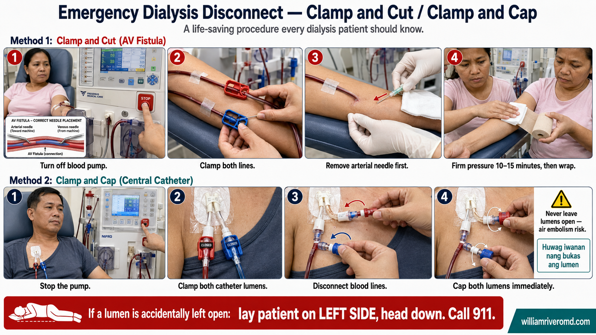

PAGASA Typhoon Signal Levels — What Each Means for Dialysis PatientsMga Antas ng Signal ng Bagyo ng PAGASA — Ano ang Ibig Sabihin ng Bawat Isa para sa mga Pasyenteng nasa DialysisMga Antas sa Signal sa Bagyo sa PAGASA — Unsa ang Kahulogan sa Matag Usa alang sa mga Pasyente sa DialysisDeng Antas ning Signal ning Bagyo ning PAGASA — Ano ing Ibig Sabihin ning Bawat Isa para king deng Pasyenteng nasa Dialysis
For most people, a typhoon signal is a reason to cancel school or work. For a dialysis patient, it may mean deciding 48 hours in advance whether to pre-dialyze, relocate to a safer area, or arrange emergency dialysis at a hospital. Every signal level requires a different response.Para sa karamihan ng tao, ang signal ng bagyo ay dahilan para kanselahin ang paaralan o trabaho. Para sa isang pasyenteng nasa dialysis, maaari itong mangahulugan ng pagdedesisyon nang 48 oras nang maaga kung mag-di-dialysis nang maaga, lilipat sa mas ligtas na lugar, o mag-aayos ng emergency dialysis sa ospital. Ang bawat antas ng signal ay nangangailangan ng ibang tugon.Alang sa kadaghanan sa mga tawo, ang signal sa bagyo rason sa pagkansela sa eskwela o trabaho. Alang sa usa ka pasyente sa dialysis, mahimong nagpasabot kini sa pagdesisyon nang 48 ka oras sa una kung mag-dialysis og sayo, molipat sa mas luwas nga lugar, o mag-arrange ug emergency dialysis sa ospital. Ang matag antas sa signal nanginahanglan ug lain nga tubag.Para king karamihan ning tao, ing signal ning bagyo ya dahilan para kanselahin ing paaralan o obran. Para king metung a pasyenteng nasa dialysis, maaari ining mangahulugan ning pagdedesisyon nang 48 oras nang maaga nung mag-di-dialysis nang maaga, lilipat sa mas ligtas na lugar, o mag-aayos ning emergency dialysis king ospital. Ing bawat antas ning signal ya nangangailangan ning ibang tugon.
![PAGASA Typhoon Signal Levels 1–5 with wind speeds (30–60, 61–120, 121–170, 171–220, >220 km/h), what each level means, potential impact, and the specific actions a dialysis patient should take at each level; plus What to Prepare Right Now — medical essentials (7–14 day medication supply, phosphate binders, BP and diabetes meds, dialysis ID), dialysis information (center contacts, schedule, alternative centers, PhilHealth), emergency go-bag (waterproof bag, flashlight, batteries, radio, power bank, masks), food and water supplies (3–7 day water, low-sodium ready-to-eat meals, low-potassium choices), important documents (PhilHealth, IDs, emergency contacts), and home preparation (secure windows, store water, check generator). Be Ready. Be Safe. Be Prepared.](../images/typhoon-signals-prepare.webp)
Every signal level requires a different response — do not wait for Signal 5 to start preparing. By Signal 2, your medications should be filled, your center contacted, and your go-bag packed. Early preparation is the single most effective thing a dialysis patient can do before a typhoon.Ang bawat antas ng signal ay nangangailangan ng ibang tugon — huwag maghintay sa Signal 5 bago magsimulang maghanda. Sa Signal 2, dapat nang napuno ang iyong mga gamot, nakipag-ugnayan sa iyong sentro, at nakaimpake ang iyong go-bag. Ang maagang paghahanda ang pinaka-epektibong bagay na maaaring gawin ng isang pasyenteng nasa dialysis bago ang isang bagyo.Ang matag antas sa signal nanginahanglan ug lain nga tubag — ayaw paghulat sa Signal 5 sa pagsugod sa pag-andam. Sa Signal 2, kinahanglan nang puno ang imong mga gamot, nakig-ugnay sa imong sentro, ug nakaimpake ang imong go-bag. Ang sayo nga pag-andam mao ang labing epektibong butang nga mahimong buhaton sa usa ka pasyente sa dialysis sa wala pa ang bagyo.Ing bawat antas ning signal ya nangangailangan ning ibang tugon — eka maghintay sa Signal 5 bago magsimulang maghanda. Sa Signal 2, dapat nang napuno ing iyung dening gamut, nakipag-ugnayan sa iyung sentro, at nakaimpake ing iyung go-bag. Ing maagang paghahanda ing pinaka-epektibong bagay na maaaring gawin ning metung a pasyenteng nasa dialysis bago ing metung a bagyo.
Missing dialysis during a typhoon is the most preventable dialysis emergencyAng hindi pagsasagawa ng dialysis sa panahon ng bagyo ang pinaka-mapipigilan na emergency sa dialysisAng pagpuslanan sa dialysis sa panahon sa bagyo mao ang labing mapugngan nga emergency sa dialysisIng ali pagsasagawa ning dialysis sa panahon ning bagyo ing pinaka-mapipigilan na emergency king dialysis
Most dialysis-related typhoon deaths in the Philippines are caused by delayed action — patients who assumed the storm would pass quickly, who could not reach their center after flooding, or who did not know what to do when their session was cancelled. Preparation eliminates this risk.Karamihan ng mga pagkamatay na may kaugnayan sa dialysis dahil sa bagyo sa Pilipinas ay sanhi ng naantalang aksyon — mga pasyenteng nagpalagay na ang bagyo ay mabilis na lilipas, hindi makakarating sa kanilang sentro pagkatapos ng baha, o hindi alam kung ano ang gagawin kapag nakansela ang kanilang sesyon. Inaalis ng paghahanda ang panganib na ito.Kadaghanan sa mga pagkamatay nga may kalabotan sa dialysis tungod sa bagyo sa Pilipinas hinungdan sa naantalang aksyon — mga pasyente nga nagpalagay nga ang bagyo molabay og paspas, dili makaabut sa ilang sentro human sa baha, o wala mahibalo kung unsa ang buhaton kung makansela ang ilang sesyon. Gikuha sa pag-andam kining risgo.Karamihan ning deng pagkamatay na may kaugnayan king dialysis dahil king bagyo king Pilipinas ya sanhi ning naantalang aksyon — deng pasyenteng nagpalagay na ing bagyo ya mabilis na lilipas, ali makakarating sa kanilang sentro kapabanuan ning baha, o ali alam nung ano ing gagawin nung nakansela ing kanilang sesyon. Inaalis ning paghahanda ing panganib na ini.
What to Prepare Right Now — Not When a Storm Is ComingAno ang Ihahanda Ngayon — Hindi Kapag Dumarating na ang BagyoUnsa ang Ipahanda Karon — Dili Kung Moabot Na ang BagyoAno ing Ihahanda Ngayon — Ali Nung Dumarating na ing Bagyo
Disaster preparedness for dialysis patients must be done before the emergency, not during it. The ideal time to prepare your go-bag, identify backup dialysis centers, and stock medications is during a calm, non-storm period. June to November is typhoon season in the Philippines — prepare by May.Ang paghahanda sa sakuna para sa mga pasyenteng nasa dialysis ay dapat gawin bago ang emergency, hindi sa panahon nito. Ang pinakamainam na oras para ihanda ang iyong go-bag, tukuyin ang mga backup na dialysis center, at i-stock ang mga gamot ay sa panahon ng kalmado, hindi sa panahon ng bagyo. Hunyo hanggang Nobyembre ang panahon ng bagyo sa Pilipinas — maghanda bago mag-Mayo.Ang pag-andam sa kalamidad alang sa mga pasyente sa dialysis kinahanglan buhaton sa wala pa ang emergency, dili atol niini. Ang pinaka-ideal nga oras sa pag-andam sa imong go-bag, pag-ila sa mga backup nga dialysis center, ug pag-stock sa mga gamot sa panahon sa kahilom, dili sa panahon sa bagyo. Hunyo hangtod Nobyembre ang panahon sa bagyo sa Pilipinas — mangandam sa wala pa mag-Mayo.Ing paghahanda sa sakuna para king deng pasyenteng nasa dialysis ya dapat gawin bago ing emergency, ali sa panahon nini. Ing pinakamainam na oras para ihanda ing iyung go-bag, tukuyin deng backup na dialysis center, at i-stock dening gamut ya sa panahon ning kalmado, ali sa panahon ning bagyo. Hunyo anggang Nobyembre ing panahon ning bagyo king Pilipinas — maghanda bago mag-Mayo.
Know your backup dialysis centersAlamin ang iyong mga backup na dialysis centerHibaw-i ang imong mga backup nga dialysis centerAlamin ing iyung deng backup na dialysis center
Identify at least two alternate dialysis centers within your region that accept emergency patients. For those in Metro Manila: Philippine General Hospital (PGH), NKTI, or nearby hospital-based HD units. For provincial patients: the nearest DOH-licensed HD center in your province and the next. Save their contact numbers now, not during a typhoon.Tukuyin ang hindi bababa sa dalawang kahaliling dialysis center sa loob ng iyong rehiyon na tumatanggap ng mga emergency na pasyente. Para sa mga nasa Metro Manila: Philippine General Hospital (PGH), NKTI, o mga kalapit na hospital-based HD unit. Para sa mga pasyente sa probinsya: ang pinakamalapit na DOH-lisensyadong HD center sa inyong lalawigan at ang susunod. I-save ang kanilang mga numero ngayon, hindi sa panahon ng bagyo.Ilhon ang dili moubos sa duha ka alternatibong dialysis center sulod sa imong rehiyon nga nagtanggap sa mga emergency nga pasyente. Alang sa mga naa sa Metro Manila: Philippine General Hospital (PGH), NKTI, o mga duol nga hospital-based HD unit. Alang sa mga pasyente sa probinsya: ang labing duol nga DOH-lisensyado nga HD center sa imong lalawigan ug ang sunod. I-save ang ilang mga numero karon, dili sa panahon sa bagyo.Tukuyin ing ali bababa sa dalawang kahaliling dialysis center sa loob ning iyung rehiyun na tumatanggap ning deng emergency na pasyente. Para king deng nasa Metro Manila: Philippine General Hospital (PGH), NKTI, o deng kalapit na hospital-based HD unit. Para king deng pasyente sa probinsya: ing pinakamalapit na DOH-lisensyadong HD center king ka lalawigan at ing susunod. I-save ing kanildeng numero ngayon, ali sa panahon ning bagyo.
Talk to your nephrologist nowMakipag-usap sa iyong nefrologo ngayonMakigsulti sa imong nephrologist karonMakipag-usap sa iyung nefrologo ngayon
Ask your nephrologist specifically: "What is your plan for my dialysis during a typhoon?" Request a written disaster protocol letter stating your diagnosis, current dialysis schedule, and authorization for emergency dialysis at any center. This letter is your most important document in a disaster.Tanungin ang iyong nefrologo nang tiyak: "Ano ang iyong plano para sa aking dialysis sa panahon ng bagyo?" Humiling ng nakasulat na disaster protocol letter na nagsasaad ng iyong diagnosis, kasalukuyang iskedyul ng dialysis, at pahintulot para sa emergency dialysis sa anumang sentro. Ang sulat na ito ang iyong pinakamahalagang dokumento sa isang sakuna.Pangutan-on ang imong nephrologist og espesipiko: "Unsa ang imong plano alang sa akong dialysis sa panahon sa bagyo?" Mangayo ug nakasulat nga disaster protocol letter nga nag-ingon sa imong diagnosis, kasamtangang iskedyul sa dialysis, ug pahintulot alang sa emergency dialysis sa bisan unsang sentro. Kining sulat mao ang imong labing mahinungdanong dokumento sa usa ka kalamidad.Tanungin ing iyung nefrologo nang tiyak: "Ano ing iyung plano para king aking dialysis sa panahon ning bagyo?" Humiling ning nakasulat na disaster protocol letter na nagsasaad ning iyung diagnosis, kasalukuyang iskedyul ning dialysis, at pahintulot para king emergency dialysis sa anumang sentro. Ing sulat na ini ing iyung pinakamahalagang dokumento sa metung a sakuna.
Dialysis center communication planPlano ng komunikasyon sa dialysis centerPlano sa komunikasyon sa dialysis centerPlano ning komunikasyon king dialysis center
Confirm with your dialysis center what their typhoon policy is. Most will call all patients if they must close. But do not rely on them to reach you — call them proactively at Signal 2. Ask: Will you close? Can I come early? Where should I go if you close?Kumpirmahin sa iyong dialysis center kung ano ang kanilang patakaran sa bagyo. Karamihan ay tatawag sa lahat ng pasyente kung kailangan nilang magsara. Ngunit huwag umasa sa kanila na maabot ka — tawagan sila nang aktibo sa Signal 2. Itanong: Magsasara ba kayo? Maaari ba akong pumunta nang maaga? Saan ako pupunta kung magsara kayo?Kumpirmahin sa imong dialysis center kung unsa ang ilang patakaran sa bagyo. Kadaghanan motawag sa tanan nga pasyente kung kinahanglan nilang magsira. Apan ayaw mosalig kanila nga maabot ka — tawagan sila og aktibo sa Signal 2. Pangutan-on: Magsira ba kamo? Mahimo ba kong moadto og sayo? Hain ako moadto kung magsira kamo?Kumpirmahin sa iyung dialysis center nung ano ing kanilang patakaran sa bagyo. Karamihan ya tatawag king amin ning pasyente nung kailangan nilang magsara. Ngarud eka umasa king da na maabot ka — tawagan sila nang aktibo sa Signal 2. Itanong: Magsasara ba kayu? Maaari ba akong pumunta nang maaga? Saan ako pupunta nung magsara kayu?
Register with your LGUMag-rehistro sa iyong LGUMag-rehistro sa imong LGUMag-rehistro sa iyung LGU
Register as a dialysis patient with your barangay and municipal health office. Many LGUs have lists of residents with special medical needs for prioritized evacuation and emergency transport. The Philippine Red Cross also maintains such registries — register at your local chapter.Mag-rehistro bilang isang pasyenteng nasa dialysis sa inyong barangay at munisipal na opisina ng kalusugan. Maraming LGU ang may mga listahan ng mga residente na may espesyal na medikal na pangangailangan para sa priority na paglikas at emergency na transportasyon. Pinapanatili rin ng Philippine Red Cross ang mga naturang talaan — mag-rehistro sa inyong lokal na sangay.Mag-rehistro isip pasyente sa dialysis sa imong barangay ug munisipal nga opisina sa kalusugan. Daghang LGU adunay mga listahan sa mga residente nga adunay espesyal nga medikal nga panginahanglan alang sa priority nga paglukas ug emergency nga transportasyon. Ang Philippine Red Cross nagpadayon usab sa ingon nga mga rehistro — mag-rehistro sa imong lokal nga sangay.Mag-rehistro bilang metung a pasyenteng nasa dialysis king ka barangay at munisipal na opisina ning kalusugan. Maraming LGU ing may deng listahan ning deng residente na may espesyal na medikal na pangangailangan para king priority na paglikas at emergency na transportasyon. Pinapanatili rin ning Philippine Red Cross deng naturang talaan — mag-rehistro king ka lokal na sangay.
Waterproof your documentsGawing waterproof ang iyong mga dokumentoBuhata nga waterproof ang imong mga dokumentoGawing waterproof ing iyung deng dokumento
Place copies of your dialysis prescription, recent lab results (within 3 months), nephrologist's contact, and PhilHealth card in a waterproof zip-lock bag. Keep one copy at home, one in your go-bag, and send a digital copy to a trusted family member or to your phone's cloud storage.Ilagay ang mga kopya ng iyong dialysis prescription, mga kamakailang resulta ng lab (sa loob ng 3 buwan), contact ng iyong nefrologo, at PhilHealth card sa isang waterproof na zip-lock bag. Panatilihin ang isang kopya sa bahay, isa sa iyong go-bag, at magpadala ng digital na kopya sa isang mapagkakatiwalaang miyembro ng pamilya o sa cloud storage ng iyong telepono.Ibutang ang mga kopya sa imong dialysis prescription, bag-ong mga resulta sa lab (sulod sa 3 ka buwan), kontak sa imong nephrologist, ug PhilHealth card sa usa ka waterproof nga zip-lock bag. Huptan ang usa ka kopya sa balay, usa sa imong go-bag, ug magpadala ug digital nga kopya sa usa ka kasaligan nga miyembro sa pamilya o sa cloud storage sa imong telepono.Ilagay deng kopya ning iyung dialysis prescription, deng kamakailang resulta ning lab (sa loob ning 3 bulan), contact ning iyung nefrologo, at PhilHealth card sa metung a waterproof na zip-lock bag. Panatilihin ing metung a kopya king bale, isa king iyung go-bag, at magpadala ning digital na kopya sa metung a mapagkakatialaang miyembro ning pamilya o sa cloud storage ning iyung telepono.
Building Your Dialysis Emergency Go-BagPagbuo ng Iyong Dialysis Emergency Go-BagPagtukod sa Imong Dialysis Emergency Go-BagPagbuo ning Iyung Dialysis Emergency Go-Bag
Every dialysis patient should maintain a go-bag that can sustain them for at least 72 hours — the minimum time before external assistance typically reaches affected areas after a major typhoon.Ang bawat pasyenteng nasa dialysis ay dapat magpanatili ng isang go-bag na maaaring suportahan sila sa loob ng hindi bababa sa 72 oras — ang pinakamaikling oras bago ang panlabas na tulong ay karaniwang umabot sa mga apektadong lugar pagkatapos ng isang malaking bagyo.Ang matag pasyente sa dialysis kinahanglan magpadayon ug go-bag nga makasuporta kanila sa dili moubos sa 72 ka oras — ang labing mugbo nga oras sa wala pa ang panlabas nga tabang nga kasagarang moabot sa mga apektadong lugar human sa usa ka dakong bagyo.Ing bawat pasyenteng nasa dialysis ya dapat magpanatili ning metung a go-bag na maaaring suportahan sila sa loob ning ali bababa sa 72 oras — ing pinakamaikling oras bago ing panlabas na tulong ya karaniwang umabot sa deng apektadong lugar kapabanuan ning metung a malda a bagyo.
Minimum 7-day medication supply at all times during typhoon seasonMinimum na 7-araw na supply ng gamot sa lahat ng oras sa panahon ng bagyoMinimum nga 7-adlaw nga supply sa gamot sa tanan nga oras sa panahon sa bagyoMinimum na 7-aldo na supply nining gamut king amin ning oras sa panahon ning bagyo
Never let your medications run below a 7-day supply between June and November. Pharmacies may be closed or flooded after a typhoon. If your medication supply is <5 days, request a refill immediately — do not wait until you run out.Huwag hayaang mababa ang iyong mga gamot sa ibaba ng 7-araw na supply sa pagitan ng Hunyo at Nobyembre. Ang mga parmasya ay maaaring sarado o nabaha pagkatapos ng bagyo. Kung ang iyong supply ng gamot ay <5 araw, humiling ng refill kaagad — huwag maghintay hanggang maubos ka.Ayaw pabuhata nga moubos ang imong mga gamot ubos sa 7-adlaw nga supply sa pagitan sa Hunyo ug Nobyembre. Ang mga parmasya mahimong sirado o nabahaan human sa bagyo. Kung ang imong supply sa gamot <5 ka adlaw, mangayo ug refill dayon — ayaw paghulat hangtod maubos ka.Eka hayaang mababa ing iyung dening gamut sa ibaba ning 7-aldo na supply sa pagitan ning Hunyo at Nobyembre. Deng parmasya ya maaaring sarado o nabaha kapabanuan ning bagyo. Nung ing iyung supply nining gamut ya <5 aldo, humiling ning refill kaagad — eka maghintay anggang maubos ka.
Critical medications — never miss theseKritikal na mga gamot — huwag kailanman palampasin ang mga itoKritikal nga mga gamot — ayaw gayud pag-priso niiniKritikal na dening gamut — eka kailanman palampasin deng ini
Phosphate binders (calcium carbonate, sevelamer, lanthanum) — must be taken with every meal even during a disaster. Antihypertensives — missed doses cause hypertensive crisis, which is life-threatening without access to a dialysis center. EPO/ESA injections (if prescribed) — require refrigeration; see below. Potassium binders (patiromer, sodium zirconium cyclosilicate) if prescribed.Phosphate binders (calcium carbonate, sevelamer, lanthanum) — dapat inumin sa bawat kain kahit sa panahon ng sakuna. Antihypertensives — ang mga napalampas na dosis ay nagdudulot ng hypertensive crisis, na mapanganib sa buhay nang walang access sa isang dialysis center. EPO/ESA injections (kung iniresetahan) — nangangailangan ng refrigeration; tingnan sa ibaba. Potassium binders (patiromer, sodium zirconium cyclosilicate) kung iniresetahan.Phosphate binders (calcium carbonate, sevelamer, lanthanum) — kinahanglan inumon sa matag kalan-on bisan sa panahon sa kalamidad. Antihypertensives — ang mga napuslan nga dosis nagdulot ug hypertensive crisis, nga mapanganib sa kinabuhi nga walay access sa usa ka dialysis center. EPO/ESA injections (kung giresetahan) — nanginahanglan ug refrigeration; tan-awa sa ubos. Potassium binders (patiromer, sodium zirconium cyclosilicate) kung giresetahan.Phosphate binders (calcium carbonate, sevelamer, lanthanum) — dapat inumin king bawat kain kahit sa panahon ning sakuna. Antihypertensives — deng napalampas na dosis ya nagdudulot ning hypertensive crisis, na mapanganib sa biye nang alang access sa metung a dialysis center. EPO/ESA injections (nung iniresetahan) — nangangailangan ning refrigeration; tingnan sa ibaba. Potassium binders (patiromer, sodium zirconium cyclosilicate) nung iniresetahan.
Refrigerated medications — special planning requiredMga gamot na nangangailangan ng refrigeration — espesyal na pagpaplano ang kailanganMga gamot nga nanginahanglan ug refrigeration — espesyal nga pagplano ang gikinahanglanDening gamut na nangangailangan ning refrigeration — espesyal na pagpaplano ing kailangan
Erythropoietin (EPO, darbepoetin) must be kept at 2–8°C. During a power outage, transfer to an insulated cooler with ice packs — EPO is stable for 7 days at room temperature (up to 25°C) if not shaken. Insulin users: the same rule applies. Do not freeze. Do not expose to direct sunlight. Prioritize these in your go-bag.Ang erythropoietin (EPO, darbepoetin) ay dapat panatilihin sa 2–8°C. Sa panahon ng power outage, ilipat sa insulated cooler na may mga ice pack — ang EPO ay stable sa loob ng 7 araw sa temperatura ng silid (hanggang 25°C) kung hindi inalog. Mga gumagamit ng insulin: ang parehong panuntunan ay naaangkop. Huwag i-freeze. Huwag ilantad sa direktang sikat ng araw. Unahin ang mga ito sa iyong go-bag.Ang erythropoietin (EPO, darbepoetin) kinahanglan huptan sa 2–8°C. Sa panahon sa power outage, ibalhin sa insulated cooler nga adunay mga ice pack — ang EPO stable sa 7 ka adlaw sa temperatura sa kwarto (hangtod 25°C) kung dili inuyog. Mga mogamit ug insulin: ang mao mao nga lagda naglapat. Ayaw i-freeze. Ayaw iladlad sa direktang silaw sa adlaw. Unahon kini sa imong go-bag.Ing erythropoietin (EPO, darbepoetin) ya dapat panatilihin sa 2–8°C. Sa panahon ning power outage, ilipat sa insulated cooler na may deng ice pack — ing EPO ya stable sa loob ning 7 aldo sa temperatura ning silid (anggang 25°C) nung ali inalog. Deng gumagamit ning insulin: ing parehong panuntunan ya naaangkop. Eka i-freeze. Eka ilantad sa direktang sikat nining aldo. Unahin deng ini sa iyung go-bag.
| ItemAytemButangAytem | Quantity (minimum)Dami (minimum)Kantidad (minimum)Dami (minimum) | NotesMga TalaMga TalaDeng Tala |
|---|---|---|
| All maintenance medicationsLahat ng maintenance na gamotTanan nga maintenance nga gamotLahat ning maintenance na gamut | 7-day supplySupply ng 7 arawSupply sa 7 ka adlawSupply ning 7 aldo | In original labeled containers with prescriptionsSa orihinal na may label na lalagyan kasama ang mga resetaSa orihinal nga may label nga sudlanan uban ang mga resetaSa orihinal na may label na lalagyan kasama deng reseta |
| Phosphate bindersPhosphate bindersPhosphate bindersPhosphate binders | Extra 7-day supplyKaragdagang supply ng 7 arawKaragdagang supply sa 7 ka adlawKaragdagang supply ning 7 aldo | Take with every meal, even in evacuation centersInumin sa bawat kain, kahit sa mga evacuation centerInumon sa matag kalan-on, bisan sa mga evacuation centerInumin king bawat kain, kahit sa deng evacuation center |
| Blood pressure monitorMonitor ng presyon ng dugoMonitor sa presyon sa dugoMoninir nining presyon nining daya | 1 unit (with spare batteries)1 unit (na may mga spare batteries)1 unit (nga adunay mga spare batteries)1 unit (na may deng spare batteries) | Manual/aneroid preferred — works without powerMas ginusto ang manual/aneroid — gumagana nang walang kuryenteMas gipili ang manual/aneroid — nagtrabaho nga walay kuryenteMas ginusto ing manual/aneroid — gumagana nang alang kuryente |
| Bottled water (safe drinking)Bottled water (ligtas na inumin)Bottled water (luwas nga imnon)Bottled water (ligtas na inumin) | 3 days supplySupply ng 3 arawSupply sa 3 ka adlawSupply ning 3 aldo | For hydration; flood water is never safe to drinkPara sa hydration; ang tubig-baha ay hindi kailanman ligtas na inuminAlang sa hydration; ang tubig sa baha dili gayud luwas nga imnonPara king hydration; ining danum-baha ya ali kailanman ligtas na inumin |
| Low-potassium emergency snacksMga emergency snacks na mababa ang potassiumMga emergency snacks nga ubos ang potassiumDeng emergency snacks na mababa ing potassium | 3 days3 araw3 ka adlaw3 aldo | Plain crackers, white rice, white bread — see diet sectionPlain crackers, puting kanin, puting tinapay — tingnan ang seksyon ng diyetaPlain crackers, puting bugas, puting tinapay — tan-awa ang seksyon sa diyetaPlain crackers, puting kanin, puting tinapay — tingnan ing seksyon ning diyeta |
| Medical ID card / braceletMedical ID card / braceletMedical ID card / braceletMedical ID card / bracelet | Always on personLaging nasa katawanLaging naa sa lawasPirming nasa bangkî | States "dialysis patient," blood type, emergency contactNagsasaad ng "dialysis patient," uri ng dugo, emergency contactNag-ingon sa "dialysis patient," klase sa dugo, emergency contactNagsasaad ning "dialysis patient," uri nining daya, emergency contact |
| Waterproof document pouchWaterproof na lalagyan ng dokumentoWaterproof nga sudlanan sa dokumentoWaterproof na lalagyan ning dokumento | 1 | Dialysis Rx, recent labs, nephrologist contact, PhilHealth cardDialysis Rx, mga kamakailang lab, contact ng nefrologo, PhilHealth cardDialysis Rx, bag-ong mga lab, kontak sa nephrologist, PhilHealth cardDialysis Rx, deng kamakailang lab, contact ning nefrologo, PhilHealth card |
| Power bank (fully charged)Power bank (puno ng charge)Power bank (puno sa charge)Power bank (puno ning charge) | 10,000 mAh minimum | For phone calls and reaching emergency contactsPara sa mga tawag sa telepono at pag-abot sa mga emergency contactAlang sa mga tawag sa telepono ug pag-abot sa mga emergency contactPara king deng tawag sa telepono at pag-abot sa deng emergency contact |
| Flashlight with extra batteriesFlashlight na may mga karagdagang bateryaFlashlight nga adunay mga karagdagang bateryaFlashlight na may deng karagdagang baterya | 1 | Do not rely on phone flashlight aloneHuwag umasa lamang sa flashlight ng teleponoAyaw mosalig sa flashlight sa telepono lamangEka umasa lamang sa flashlight ning telepono |
| Insulated cooler with ice packsInsulated cooler na may mga ice packInsulated cooler nga adunay mga ice packInsulated cooler na may deng ice pack | 1 small cooler1 maliit na cooler1 gamay nga cooler1 maliit na cooler | For EPO, insulin, and other refrigerated medicationsPara sa EPO, insulin, at iba pang mga gamot na nangangailangan ng refrigerationAlang sa EPO, insulin, ug uban pang mga gamot nga nanginahanglan ug refrigerationPara king EPO, insulin, at iba pdening gamut na nangangailangan ning refrigeration |
Do not drink flood water — everHuwag uminom ng tubig-baha — kailanmanAyaw pag-inum ug tubig sa baha — kailanmanEka uminom nining danum-baha — kailanman
Floodwater after a typhoon is contaminated with sewage, chemicals, and pathogens. For dialysis patients, drinking contaminated water can cause severe infections that are far harder to treat without adequate kidney function. Drink only commercially bottled water or water that has been boiled for at least 1 minute after cooling — even if it looks clear.Ang tubig-baha pagkatapos ng bagyo ay kontaminado ng dumi ng alkantarya, mga kemikal, at mga pathogen. Para sa mga pasyenteng nasa dialysis, ang pag-inom ng kontaminadong tubig ay maaaring magdulot ng matinding mga impeksyon na mas mahirap gamutin nang walang sapat na function ng bato. Uminom lamang ng komersyal na bottled water o tubig na pinakuluan ng hindi bababa sa 1 minuto pagkatapos lumamig — kahit mukhang malinaw ito.Ang tubig sa baha human sa bagyo kontaminado ug dumi sa alkantarya, mga kemikal, ug mga pathogen. Alang sa mga pasyente sa dialysis, ang pag-inum sa kontaminadong tubig mahimong magdulot ug grabe nga mga impeksyon nga mas lisud tambalan nga walay saktong function sa kidney. Moinum lamang ug komersyal nga bottled water o tubig nga gipabukal og dili moubos sa 1 minuto human malamig — bisan murag klaro kini.Ining danum-baha kapabanuan ning bagyo ya kontaminado ning dumi ning alkantarya, deng kemikal, at deng pathogen. Para king deng pasyenteng nasa dialysis, ing pag-inom ning kontaminadoning danum ya maaaring magdulot ning matinding deng impeksyon na mas mahirap gamutin nang alang sapat na function nining batu. Uminom lamang ning komersyal na bottled water o danum na pinakuluan ning ali bababa sa 1 minuto kapabanuan lumamig — kahit mukhang malinaw ini.

Your go-bag is your lifeline — prepare it now, check it every 3 months, and store it near the door. When the typhoon hits, stay indoors, take all medications on schedule, follow strict diet and fluid limits, and contact your dialysis center as soon as it is safe to do so.Ang iyong go-bag ang iyong panghabang-buhay — ihanda ito ngayon, suriin ito tuwing 3 buwan, at ilagay ito malapit sa pintuan. Kapag tumama ang bagyo, manatili sa loob ng bahay, kumuha ng lahat ng gamot ayon sa iskedyul, sundin ang mahigpit na diyeta at limitasyon ng likido, at makipag-ugnayan sa iyong dialysis center sa sandaling ligtas na gawin ito.Ang imong go-bag mao ang imong kinabuhi — ihanda kini karon, susihon kini matag 3 ka buwan, ug ibutang kini duol sa pinto. Kung moapil ang bagyo, magpabilin sa sulod sa balay, dawata ang tanan nga gamot sumala sa iskedyul, sunda ang mahigpit nga diyeta ug limitasyon sa likido, ug makig-ugnay sa imong dialysis center sa dihang luwas na kini buhaton.Ing iyung go-bag ing iyung panghabang-biye — ihanda ini ngayon, suriin ini tuwing 3 bulan, at ilagay ini malapit sa pintuan. Nung tumama ing bagyo, manatili sa loob ning bale, kumuha ning lahat nining gamut ayon sa iskedyul, sundin ing mahigpit na diyeta at limitasyon ning likido, at makipag-ugnayan sa iyung dialysis center sa sandaling ligtas na gawin ini.
What to Do When the Typhoon Is HappeningAno ang Gagawin Kapag Nagaganap ang BagyoUnsa ang Buhaton Kung Nagahinabo ang BagyoAno ing Gagawin Nung Nagaganap ing Bagyo
Once a typhoon makes landfall, your primary job is to stay safe, take your medications on schedule, follow strict dietary discipline, and avoid going outside. Do not attempt to travel to your dialysis center during a typhoon — the risk of injury or death from the storm far exceeds the risk of missing one session when your diet is properly managed.Kapag lumapag na ang isang bagyo, ang iyong pangunahing trabaho ay manatiling ligtas, kumuha ng iyong mga gamot ayon sa iskedyul, sundin ang mahigpit na disiplina sa diyeta, at iwasan ang paglabas sa bahay. Huwag subukang maglakbay sa iyong dialysis center sa panahon ng bagyo — ang panganib ng pinsala o kamatayan mula sa bagyo ay higit na malaki kaysa sa panganib ng pagpalampas ng isang sesyon kapag ang iyong diyeta ay maayos na pinamamahalaan.Sa dihang mosaka na ang bagyo, ang imong panguna nga trabaho mao ang magpabilin nga luwas, dawata ang imong mga gamot sumala sa iskedyul, sunda ang mahigpit nga disiplina sa diyeta, ug likayan ang paggawas sa balay. Ayaw pagsulayi nga mobyahe sa imong dialysis center sa panahon sa bagyo — ang risgo sa kadaot o kamatayon gikan sa bagyo labaw pa sa risgo sa pagpuslanan ug usa ka sesyon kung ang imong diyeta husto nga gipangalagaan.Nung lumapag na ing metung a bagyo, ing iyung pangunahing obran ya manatiling ligtas, kumuha ning iyung dening gamut ayon sa iskedyul, sundin ing mahigpit na disiplina king diyeta, at iwasan ing paglabas king bale. Eka subukang maglakbay sa iyung dialysis center sa panahon ning bagyo — ing panganib ning pinsala o kamatayan mula sa bagyo ya higit na malaki kaysa sa panganib ning pagpalampas ning metung a sesyon nung ing iyung diyeta ya maayos na pinamamahalaan.
Take all medications on scheduleKumuha ng lahat ng gamot ayon sa iskedyulDawata ang tanan nga gamot sumala sa iskedyulKumuha ning lahat nining gamut ayon sa iskedyul
Even if you cannot eat a full meal, take your blood pressure medications and phosphate binders with whatever food is available. Missing antihypertensives for 24–48 hours during physical and emotional stress can trigger a hypertensive emergency. Set phone alarms for medication times.Kahit hindi ka makakain ng buong kain, kumuha ng iyong mga gamot sa presyon ng dugo at phosphate binders kasama ang anumang pagkain na available. Ang pagpapalampas ng mga antihypertensive sa loob ng 24–48 oras sa panahon ng pisikal at emosyonal na stress ay maaaring mag-trigger ng hypertensive emergency. Mag-set ng mga alarm sa telepono para sa mga oras ng gamot.Bisan dili ka makakaon ug tibuok nga kalan-on, dawata ang imong mga gamot sa presyon sa dugo ug phosphate binders uban ang bisan unsang pagkaon nga available. Ang pagpuslanan sa mga antihypertensive sa 24–48 ka oras sa panahon sa pisikal ug emosyonal nga stress mahimong mag-trigger ug hypertensive emergency. Mag-set ug mga alarm sa telepono alang sa mga oras sa gamot.Kahit ali ka makakain ning buong kain, kumuha ning iyung dening gamut sa presyon nining daya at phosphate binders kasama ing anumaning pamangan na available. Ing pagpapalampas ning deng antihypertensive sa loob ning 24–48 oras sa panahon ning pisikal at emosyonal na stress ya maaaring mag-trigger ning hypertensive emergency. Mag-set ning deng alarm sa telepono para king deng oras nining gamut.
Follow your strictest dietSundin ang iyong pinakamahigpit na diyetaSunda ang imong pinakamahigpit nga diyetaSundin ing iyung pinakamahigpit na diyeta
During a missed dialysis, toxic waste products (potassium, urea, phosphorus, creatinine) accumulate. Eat only white rice, white bread, plain crackers, and egg whites. Absolutely avoid bananas, coconut water, tomatoes, camote, camote tops, and all fruit juices — even small amounts of high-potassium food can cause cardiac arrhythmia in a patient who has missed dialysis.Sa panahon ng napalampas na dialysis, nag-iipon ang mga nakakalason na produkto ng basura (potassium, urea, phosphorus, creatinine). Kumain lamang ng puting kanin, puting tinapay, plain crackers, at puti ng itlog. Iwasang ganap ang mga saging, tubig ng niyog, kamatis, kamote, talbos ng kamote, at lahat ng fruit juices — kahit maliit na halaga ng pagkaing mataas ang potassium ay maaaring magdulot ng cardiac arrhythmia sa isang pasyenteng napalampas ang dialysis.Sa panahon sa napuslanan nga dialysis, nag-iipon ang mga makahilo nga produkto sa basura (potassium, urea, phosphorus, creatinine). Mokaon lamang ug puting bugas, puting tinapay, plain crackers, ug puti sa itlog. Ganap nga likayi ang mga saging, tubig sa niyog, kamatis, camote, talbos sa camote, ug tanan nga fruit juices — bisan gamay nga kantidad sa pagkaon nga taas ang potassium mahimong magdulot ug cardiac arrhythmia sa usa ka pasyente nga napuslanan ang dialysis.Sa panahon ning napalampas na dialysis, nag-iipon deng nakakalason na produkto ning basura (potassium, urea, phosphorus, creatinine). Kumain lamang ning puting kanin, puting tinapay, plain crackers, at puti ning itlog. Iwasang ganap deng saging, danum ning niyog, kamatis, kamote, talbos ning kamote, at lahat ning fruit juices — kahit maliit na halaga nining pamangang mataas ing potassium ya maaaring magdulot ning cardiac arrhythmia sa metung a pasyenteng napalampas ing dialysis.
Restrict fluid strictlyMahigpit na limitahan ang likidoMahigpit nga limitahan ang likidoMahigpit na limitahan ing likido
Your kidneys cannot remove excess fluid during a missed session. Drink only the amount your nephrologist prescribed for fluid restriction. If you normally restrict to 500 mL/day, maintain that limit during the typhoon. Fluid overload from excess drinking causes pulmonary edema — shortness of breath that requires emergency treatment.Hindi maaalis ng iyong mga bato ang sobrang likido sa panahon ng napalampas na sesyon. Uminom lamang ng halaga na inireseta ng iyong nefrologo para sa paghihigpit ng likido. Kung karaniwan mong nililimitahan sa 500 mL/araw, panatilihin ang limitasyong iyon sa panahon ng bagyo. Ang labis na likido mula sa sobrang pag-inom ay nagdudulot ng pulmonary edema — kakulangan ng hininga na nangangailangan ng emergency na paggamot.Ang imong mga kidney dili makakuha sa sobrang likido sa panahon sa napuslanan nga sesyon. Moinom lamang sa kantidad nga giresetahan sa imong nephrologist alang sa paghigpit sa likido. Kung kasagarang imong gilimitahan sa 500 mL/adlaw, huptan kana nga limitasyon sa panahon sa bagyo. Ang sobrang likido gikan sa sobrang pag-inum nagdulot ug pulmonary edema — kakulangan sa gininhawa nga nanginahanglan ug emergency nga paggamot.Ali maaalis ning iyung dening batu ing sobrang likido sa panahon ning napalampas na sesyon. Uminom lamang ning halaga na inireseta ning iyung nefrologo para king paghihigpit ning likido. Nung karaniwan mong nililimitahan sa 500 mL/aldo, panatilihin ing limitasyong iyun sa panahon ning bagyo. Ing labis na likido mula sa sobrang pag-inom ya nagdudulot ning pulmonary edema — kakulangan ning hininga na nangangailangan ning emergency na paggamut.
Communicate with your dialysis centerMakipag-ugnayan sa iyong dialysis centerMakig-ugnay sa imong dialysis centerMakipag-ugnayan sa iyung dialysis center
As soon as it is safe to use your phone, contact your dialysis center to report that you missed your session and ask for the earliest available rescheduled slot. Text is more reliable than calls during overloaded networks. Also notify your nephrologist or the on-call physician — most nephrologists will advise you by text during a disaster if you inform them.Sa sandaling ligtas na gamitin ang iyong telepono, makipag-ugnayan sa iyong dialysis center upang iulat na napalampas mo ang iyong sesyon at humingi ng pinakamaagang available na muling nakatakdang slot. Ang text ay mas mapagkakatiwalaan kaysa sa mga tawag sa panahon ng mga overloaded na network. Abisuhan din ang iyong nefrologo o ang on-call na doktor — karamihan ng mga nefrologo ay magbibigay ng payo sa iyo sa pamamagitan ng text sa panahon ng sakuna kung aabisuhan mo sila.Sa dihang luwas na gamiton ang imong telepono, makig-ugnay sa imong dialysis center aron ireport nga napuslanan ang imong sesyon ug mangayo sa labing sayo nga available nga na-reschedule nga slot. Ang text mas masaligan kaysa mga tawag sa panahon sa mga overloaded nga network. Abisuhan usab ang imong nephrologist o ang on-call nga doktor — kadaghanan sa mga nephrologist maghatag ug payo kanimo pinaagi sa text sa panahon sa kalamidad kung abisuhan mo sila.Sa sandaling ligtas na gamitin ing iyung telepono, makipag-ugnayan sa iyung dialysis center para iulat na napalampas mo ing iyung sesyon at humingi ning pinakamaagang available na muling nakatakdang slot. Ing text ya mas mapagkakatialaan kaysa sa deng tawag sa panahon ning deng overloaded na network. Abisuhan din ing iyung nefrologo o ing on-call na doktor — karamihan ning deng nefrologo ya magbibigay ning payo king ka sa pamamagitan ning text sa panahon ning sakuna nung aabisuhan mo sila.
Know when to call for emergency helpAlamin kung kailan tatawag para sa emergency na tulongHibaw-i kung kanus-a tawagan ang emergency nga tabangAlamin nung kailan tatawag para king emergency na tulong
Go to the nearest ER or call emergency services (911) immediately if you experience: severe difficulty breathing, chest pain, rapid or irregular heartbeat, swelling of the legs worsening rapidly, confusion, seizures, or if you have missed 2 or more consecutive dialysis sessions. These are life-threatening signs of fluid overload, hyperkalemia, or uremia.Pumunta sa pinakamalapit na ER o tumawag sa mga emergency service (911) kaagad kung naranasan mo: matinding kahirapan sa paghinga, sakit sa dibdib, mabilis o irregular na tibok ng puso, pamamaga ng mga binti na mabilis na lumala, pagkalito, mga seizure, o kung napalampas mo na ang 2 o higit pang magkakasunod na sesyon ng dialysis. Ito ay mga banta sa buhay na tanda ng fluid overload, hyperkalemia, o uremia.Adto sa labing duol nga ER o tawagan ang mga emergency service (911) dayon kung masinati mo: grabe nga kalisod sa pagginhawa, kasakit sa dughan, paspas o irregular nga pagtibok sa kasingkasing, pamaga sa mga bitiis nga nagkamala pag-ayo, kalibog, mga seizure, o kung napuslanan mo na ang 2 o labaw pa nga magkasunod nga sesyon sa dialysis. Kini mga banta sa kinabuhi nga mga timaan sa fluid overload, hyperkalemia, o uremia.Pumunta sa pinakamalapit na ER o tumawag sa deng emergency service (911) kaagad nung naranasan mo: matinding kahirapan sa paghinga, sakit sa dibdib, mabilis o irregular na tibok nining pusu, pamamaga ning deng binti na mabilis na lumala, pagkalini, deng seizure, o nung napalampas mo na ing 2 o higit pang magkakasunod na sesyon ning dialysis. Ini ya deng banta sa biye na tanda ning fluid overload, hyperkalemia, o uremia.
Warning signs that require emergency care — even during a typhoonMga palatandaan ng babala na nangangailangan ng emergency na pag-aalaga — kahit sa panahon ng bagyoMga timaan sa pasidaan nga nanginahanglan ug emergency nga pag-atiman — bisan sa panahon sa bagyoDeng palatandaan ning babala na nangangailangan ning emergency na pag-aalaga — kahit sa panahon ning bagyo
- Shortness of breath at rest or inability to lie flat (pulmonary edema)Kakulangan ng hininga sa pahinga o kawalan ng kakayahang humiga nang patag (pulmonary edema)Kakulangan sa gininhawa sa pahilay o kawad-on sa kahimtang nga mohigda og patag (pulmonary edema)Kakulangan ning hininga sa pahinga o kaalan ning kakayahang humiga nang patag (pulmonary edema)
- Chest pain or pressure (cardiac arrhythmia from hyperkalemia)Sakit o presyon sa dibdib (cardiac arrhythmia mula sa hyperkalemia)Kasakit o presyon sa dughan (cardiac arrhythmia gikan sa hyperkalemia)Sakit o presyon sa dibdib (cardiac arrhythmia mula sa hyperkalemia)
- Pulse that feels very fast, very slow, or irregularPulso na nakakaramdam ng napakabilis, napakabagal, o irregularPulso nga mobati nga hilabihan kagaspas, hilabihan kahinay, o irregularPulso na nakakaramdam ning napakabilis, napakabagal, o irregular
- Extreme weakness, near-paralysis of arms or legs (severe hyperkalemia)Matinding kahinaan, malapit na paralisis ng mga braso o binti (matinding hyperkalemia)Grabe nga kahuyang, hapit nang paralisis sa mga bukton o bitiis (grabe nga hyperkalemia)Matinding kahinaan, malapit na paralisis ning deng braso o binti (matinding hyperkalemia)
- Confusion, drowsiness, or difficulty waking up (uremic encephalopathy)Pagkalito, antok, o kahirapan sa paggising (uremic encephalopathy)Kalibog, pagkaantok, o kalisod sa pagmata (uremic encephalopathy)Pagkalini, antok, o kahirapan sa paggising (uremic encephalopathy)
- Convulsions or seizuresMga kombulsyon o seizureMga kombulsyon o seizureDeng kombulsyon o seizure
- Missing 2 or more consecutive dialysis sessionsPagpapalampas ng 2 o higit pang magkakasunod na sesyon ng dialysisPagpuslanan ug 2 o labaw pa nga magkasunod nga sesyon sa dialysisPagpapalampas ning 2 o higit pang magkakasunod na sesyon ning dialysis
Emergency Dialysis Disconnect — "Clamp and Cut" & "Clamp and Cap"Emergency na Pagdiskonekta sa Dialysis — "Clamp and Cut" at "Clamp and Cap"Emergency nga Pagdiskonekta sa Dialysis — "Clamp and Cut" ug "Clamp and Cap"Emergency na Pagdiskonekta sa Dialysis — "Clamp and Cut" at "Clamp and Cap"
If you are on the dialysis machine when a forced evacuation is ordered — rising floodwater reaching the center, structural danger, fire, or an order to leave immediately — you cannot wait for a nurse to properly return your blood and disconnect you. The clamp-and-cut (AV fistula/graft) and clamp-and-cap (central catheter) procedures allow a trained patient or caregiver to disconnect safely in under two minutes. Every dialysis patient and one adult family member should know this procedure.Kung ikaw ay nasa dialysis machine kapag inutusan ang forced evacuation — tumataas na tubig-baha na umaabot sa sentro, panganib sa istruktura, sunog, o utos na umalis kaagad — hindi ka makakapaghintay para sa isang nars na maayos na ibalik ang iyong dugo at idiskonekta ka. Ang mga pamamaraan ng clamp-and-cut (AV fistula/graft) at clamp-and-cap (central catheter) ay nagpapahintulot sa isang sinanay na pasyente o tagapag-alaga na ligtas na magdiskonekta sa loob ng dalawang minuto. Ang bawat pasyenteng nasa dialysis at isang miyembro ng pamilyang matanda ay dapat malaman ang pamamaraang ito.Kung ikaw naa sa dialysis machine kung gisugo ang forced evacuation — nagkataas nga tubig sa baha nga moabot sa sentro, peligro sa istruktura, sunog, o mando nga molukat dayon — dili ka makapaghulat para sa usa ka nars nga husto nga ibalik ang imong dugo ug idiskonekta ka. Ang mga pamamaraan sa clamp-and-cut (AV fistula/graft) ug clamp-and-cap (central catheter) nagtugot sa usa ka sinanay nga pasyente o tagapag-atiman nga luwas nga magdiskonekta sulod sa duha ka minuto. Ang matag pasyente sa dialysis ug usa ka hamtong nga miyembro sa pamilya kinahanglan mahibalo sa pamamaraan nga ito.Nung ikaw ya nasa dialysis machine nung inutusan ing forced evacuation — tumatas a danum-baha na umaabot sa sentro, panganib sa istruktura, sunog, o utos na umalis kaagad — ali ka makanunghintay para king metung a nars na maayos na ibalik ing iyuning daya at idiskonekta ka. Deng pamamaraan ning clamp-and-cut (AV fistula/graft) at clamp-and-cap (central catheter) ya nagpapahintulot sa metung a sinanay na pasyente o tagapag-alaga na ligtas na magdiskonekta sa loob ning dalawang minuto. Ing bawat pasyenteng nasa dialysis at metung a miyembro ning pamilyang matanda ya dapat malaman ing pamamaraang ini.

This procedure is for genuine life-threatening emergencies onlyAng pamamaraang ito ay para lamang sa tunay na mapanganib sa buhay na mga emergencyKining pamamaraan alang lamang sa tunay nga mga emergency nga mapanganib sa kinabuhiIng pamamaraang ini ya para lamang sa tunay na mapanganib sa biye na deng emergency
Do not disconnect yourself because you are uncomfortable or in a hurry. This is only for situations where staying connected is more dangerous than disconnecting — active flooding, building collapse risk, fire, or a medical emergency requiring immediate transport. Always ask a nurse or technician to disconnect you if one is available.Huwag kailanman magdiskonekta ng iyong sarili dahil hindi ka komportable o nagmamadali. Ito ay para lamang sa mga sitwasyon kung saan ang pananatiling konektado ay mas mapanganib kaysa sa pagdiskonekta — aktibong pagbaha, panganib ng pagbagsak ng gusali, sunog, o medikal na emergency na nangangailangan ng agarang transportasyon. Laging humingi sa isang nars o technician na idiskonekta ka kung may available.Ayaw gayud pagdiskonekta sa imong kaugalingon tungod kay dili ka komportable o nagdali. Kini alang lamang sa mga sitwasyon diin ang pagpabilin nga konektado mas delikado kaysa pagdiskonekta — aktibong pagbaha, risgo sa pagkaguba sa bilding, sunog, o medikal nga emergency nga nanginahanglan ug dayon nga transportasyon. Laging pangayoa ang usa ka nars o technician nga idiskonekta ka kung adunay available.Eka kailanman magdiskonekta ning iyung sarili dahil ali ka komportable o nagmamadali. Ini ya para lamang sa deng sitwasyon nung saan ing pananatiling konektado ya mas mapanganib kaysa sa pagdiskonekta — aktibong pagbaha, panganib ning pagbagsak ning gusali, sunog, o medikal na emergency na nangangailangan ning agarang transportasyon. Pirming humingi sa metung a nars o technician na idiskonekta ka nung may available.
Method 1 — "Clamp and Cut" (AV Fistula or AV Graft)Paraan 1 — "Clamp and Cut" (AV Fistula o AV Graft)Pamaagi 1 — "Clamp and Cut" (AV Fistula o AV Graft)Paraan 1 — "Clamp and Cut" (AV Fistula o AV Graft)
Used when your access is an arteriovenous fistula or graft connected by needles inserted into your arm. The goal is to stop the machine, remove the needles safely, and apply firm, sustained pressure.Ginagamit kapag ang iyong access ay isang arteriovenous fistula o graft na konektado ng mga karayom na naipasok sa iyong braso. Ang layunin ay ihinto ang makina, ligtas na alisin ang mga karayom, at maglapat ng matatag at tuluy-tuloy na presyon.Gigamit kung ang imong access usa ka arteriovenous fistula o graft nga konektado sa mga dagom nga gisulod sa imong bukton. Ang tumong mao ang paghunong sa makina, luwas nga pagkuha sa mga dagom, ug paglapat ug lig-on ug padayon nga presyon.Ginagamit nung ing iyung access ya metung a arteriovenous fistula o graft na konektado ning deng karayom na naipasok sa iyung braso. Ing layunin ya ihinto ing makina, ligtas na alisin deng karayom, at maglapat ning matatag at tuluy-tuloy na presyon.
Step-by-step: AV Fistula / AV Graft Emergency Disconnect
- 1Alert a nurse or technician first — shout or call out. If no one responds within 30 seconds and the danger is immediate, proceed.
- 2Turn off the blood pump — press the large red STOP button or switch off the machine. This stops blood from circulating.
- 3Clamp both blood lines — locate the roller clamps on the arterial line (red end, from your arm to the machine) and the venous line (blue end, from the machine back to your arm). Roll or pinch both clamps shut so no blood can flow through the tubing.
- 4Prepare gauze pads — take 2–3 sterile gauze pads (or any clean cloth if gauze is unavailable) in your free hand. You will apply these immediately when you remove each needle.
- 5Remove the tape from the arterial needle (the one closer to your shoulder, usually connected to the red-labeled line). Grip the needle hub — not the tubing — and withdraw it smoothly and straight out of the skin.
- 6Apply firm, direct pressure immediately — press gauze firmly on the needle site. Do not lift to check — maintain continuous pressure. Have a bystander hold pressure if you need your hand free.
- 7Repeat for the venous needle (the one closer to your hand, connected to the blue-labeled line). Remove, apply firm pressure.
- 8Hold pressure for 10–15 minutes — or until bleeding stops. Fistula sites bleed more than regular veins because of high blood flow. Do not release pressure early. Wrap tightly with a bandage roll or cloth if you must move.
- 9Evacuate and seek emergency care. Tell the receiving ER staff that you are a dialysis patient who self-disconnected during an emergency and the approximate time you disconnected.
You will lose some blood — this is expected and acceptableMawawalan ka ng kaunting dugo — ito ay inaasahan at katanggap-tanggapMawad-an ka ug pipila ka dugo — kini gipaabot ug katanggap-tanggapMawaalan ka ning kauntining daya — ini ya inaasahan at katanggap-tanggap
Approximately 200–300 mL of blood remains in the dialysis circuit when you disconnect. In an emergency this blood is not returned to you. For most adults this is safe — similar to a blood donation. Do not panic. Focus on pressure at the needle sites and evacuating safely.Humigit-kumulang 200–300 mL ng dugo ang nananatili sa dialysis circuit kapag nagdiskonekta ka. Sa isang emergency ang dugong ito ay hindi ibabalik sa iyo. Para sa karamihan ng mga matatanda ito ay ligtas — katulad ng pagbibigay ng dugo. Huwag mag-panic. Mag-focus sa presyon sa mga lugar ng karayom at sa ligtas na paglikas.Mga 200–300 mL sa dugo ang nagpabilin sa dialysis circuit kung magdiskonekta ka. Sa usa ka emergency kining dugo dili ibalik kanimo. Alang sa kadaghanan sa mga hamtong kini luwas — susama sa paghatag ug dugo. Ayaw mag-panic. Mag-focus sa presyon sa mga lugar sa dagom ug sa luwas nga paglukas.Humigit-kumulang 200–300 mL nining daya ing nananatili king dialysis circuit nung nagdiskonekta ka. Sa metung a emergency ining dayang ini ya ali ibabalik sa iyo. Para king karamihan ning deng matatanda ini ya ligtas — katulad ning pagbibigay nining daya. Eka mag-panic. Mag-focus sa presyon sa deng lugar ning karayom at sa ligtas na paglikas.
Method 2 — "Clamp and Cap" (Central Venous Catheter / Perm-a-Cath / Tesio)Paraan 2 — "Clamp and Cap" (Central Venous Catheter / Perm-a-Cath / Tesio)Pamaagi 2 — "Clamp and Cap" (Central Venous Catheter / Perm-a-Cath / Tesio)Paraan 2 — "Clamp and Cap" (Central Venous Catheter / Perm-a-Cath / Tesio)
Used when your access is a tunneled central catheter (Perm-a-Cath, Tesio, or temporary neck/chest line). These catheters do not require needles — they connect directly to the blood lines. The risk is different: you must cap the lumens immediately to prevent air embolism and catheter infection.Ginagamit kapag ang iyong access ay isang tunneled central catheter (Perm-a-Cath, Tesio, o pansamantalang linya sa leeg/dibdib). Ang mga catheter na ito ay hindi nangangailangan ng mga karayom — direkta silang kumokonekta sa mga linya ng dugo. Ang panganib ay iba: kailangan mong agad na i-cap ang mga lumen upang maiwasan ang air embolism at impeksyon ng catheter.Gigamit kung ang imong access usa ka tunneled central catheter (Perm-a-Cath, Tesio, o temporaryong linya sa liog/dughan). Kining mga catheter wala magkinahanglan ug mga dagom — direkta silang nagkonekta sa mga linya sa dugo. Ang risgo lain: kinahanglan nimong dayon i-cap ang mga lumen aron mapugngan ang air embolism ug impeksyon sa catheter.Ginagamit nung ing iyung access ya metung a tunneled central catheter (Perm-a-Cath, Tesio, o pansamantalang linya sa leeg/dibdib). Deng catheter na ini ya ali nangangailangan ning deng karayom — direkta silang kumokonekta sa deng linya nining daya. Ing panganib ya iba: kailangan mong agad na i-cap deng lumen para maiwasan ing air embolism at impeksyon ning catheter.
Step-by-step: Central Catheter Emergency Disconnect
- 1Turn off the blood pump first — press STOP. This is critical before any disconnection to prevent air from being pulled into the circuit.
- 2Clamp both catheter clamps — your catheter has two built-in clamps or slide clamps, one on each lumen (red = arterial, blue = venous). Slide or clamp both fully closed. This prevents blood loss and air entry.
- 3Clamp the blood lines too — use the roller clamps on both the arterial and venous tubing before disconnecting. Both sides must be clamped.
- 4Disconnect the blood lines at the catheter hub — twist the Luer-lock connectors counterclockwise. Keep your finger or a clean cloth briefly over the catheter opening as you prepare the caps.
- 5Cap both lumens immediately — attach the heparin-filled catheter caps (pre-filled caps are kept with your catheter kit). If caps are unavailable, a sterile syringe tip locked on the hub is an acceptable temporary measure. Never leave a lumen open — air embolism can be fatal.
- 6Cover the catheter exit site — wrap the catheter loosely against your chest or neck with gauze or a clean cloth. Protect it from water and contamination during the evacuation.
- 7Go to the ER. Tell the team you have a tunneled catheter that was disconnected during an emergency, the time of disconnection, and how much of your session was completed.
Air embolism — the most dangerous risk with cathetersAir embolism — ang pinaka-mapanganib na panganib sa mga catheterAir embolism — ang labing delikadong risgo sa mga catheterAir embolism — ing pinaka-mapanganib na panganib sa deng catheter
An uncapped open catheter lumen can allow air to enter your bloodstream. Air embolism is immediately life-threatening. If you or a bystander accidentally leaves a lumen open — clamp it shut instantly and lay the patient on their left side with head down (left lateral decubitus position). Call emergency services immediately. This position traps air in the right ventricle away from the pulmonary artery and buys time for emergency treatment.Ang isang bukas na lumen ng catheter na walang takip ay maaaring magpahintulot ng hangin na makapasok sa iyong daluyan ng dugo. Ang air embolism ay agad na mapanganib sa buhay. Kung ikaw o isang naroroon ay aksidenteng nag-iwan ng isang lumen na bukas — agad itong i-clamp at ipatihiga ang pasyente sa kanilang kaliwang tagiliran na nakababa ang ulo (left lateral decubitus position). Tumawag agad sa mga emergency service. Ang posisyon na ito ay humahawak ng hangin sa kanang ventricle malayo sa pulmonary artery at nagbibigay ng oras para sa emergency na paggamot.Ang usa ka bukas nga lumen sa catheter nga walay takup mahimong magtugot sa hangin nga mosulod sa imong daluyan sa dugo. Ang air embolism dayon nga mapanganib sa kinabuhi. Kung ikaw o usa ka taong naglabay aksidenteng nag-iwan ug bukas nga lumen — dayon i-clamp kini ug ipatihigda ang pasyente sa ilang wala nga kilid nga nakalusad ang ulo (left lateral decubitus position). Tawagan dayon ang mga emergency service. Kining posisyon nagbihag sa hangin sa tuo nga ventricle layo sa pulmonary artery ug naghatag ug oras alang sa emergency nga paggamot.Ing metung a bukas na lumen ning catheter na alang takip ya maaaring magpahintulot ning hangin na makapasok sa iyung daluyan nining daya. Ing air embolism ya agad na mapanganib sa biye. Nung ikaw o metung a naroroon ya aksidenteng nag-iwan ning metung a lumen na bukas — agad ining i-clamp at ipatihiga ing pasyente sa kanilang kaliwang tagiliran na nakababa ing ulo (left lateral decubitus position). Tumawag agad sa deng emergency service. Ing posisyon na ini ya humahawak ning hangin sa kanang ventricle malayo sa pulmonary artery at nagbibigay ning oras para king emergency na paggamut.
Practice before you need itMag-practice bago mo ito kailanganinMag-practice sa wala pa nimo kini kinahanglanonMag-practice bago mo ini kailanganin
Ask your dialysis nurse to walk you through this procedure during a calm session. Identify where your clamps are, where the STOP button is, and where your caps are kept. One slow practice run makes an actual emergency much safer. Ask your center to document that you received this training.Humingi sa iyong dialysis nurse na gabayan ka sa pamamaraang ito sa panahon ng isang kalmadong sesyon. Tukuyin kung nasaan ang iyong mga clamp, nasaan ang STOP button, at kung saan naka-imbak ang iyong mga cap. Ang isang mabagal na practice run ay nagpapaganda ng kaligtasan sa isang aktwal na emergency. Humingi sa iyong sentro na idokumento na natanggap mo ang pagsasanay na ito.Pangayoa ang imong dialysis nurse nga giyahan ka niining pamamaraan sa panahon sa usa ka kalmado nga sesyon. Ilhon kung asa ang imong mga clamp, asa ang STOP button, ug asa gitago ang imong mga cap. Ang usa ka hinay nga practice run nagpahimong mas luwas ang usa ka aktwal nga emergency. Pangayoa ang imong sentro nga idokumento nga nakadawat ka niining pagsasanay.Humingi sa iyung dialysis nurse na gabayan ka sa pamamaraang ini sa panahon ning metung a kalmadong sesyon. Tukuyin nung nasaan ing iyung deng clamp, nasaan ing STOP button, at nung saan naka-imbak ing iyung deng cap. Ing metung a mabagal na practice run ya nagpapaganda ning kaligtasan sa metung a aktwal na emergency. Humingi sa iyung sentro na idokumento na natanggap mo ing pagsasanay na ini.
What to bring when you go to the ERAno ang dadalhin kapag pumunta ka sa ERUnsa ang dad-on kung moadto ka sa ERAno ing dadalhin nung pumunta ka sa ER
Bring your dialysis ID card, your medication list, and if possible your catheter cap kit. Tell the ER staff: your dialysis center's name and number, what time your session started, what time you disconnected, and your dry weight. This allows them to estimate fluid and toxin accumulation and decide on emergency dialysis.Dalhin ang iyong dialysis ID card, ang iyong listahan ng gamot, at kung posible ang iyong catheter cap kit. Sabihin sa mga tauhan ng ER: ang pangalan at numero ng iyong dialysis center, kung anong oras nagsimula ang iyong sesyon, kung anong oras ka nagdiskonekta, at ang iyong dry weight. Nagpapahintulot ito sa kanila na matantiya ang akumulasyon ng likido at lason at magdesisyon sa emergency na dialysis.Dad-a ang imong dialysis ID card, ang imong listahan sa gamot, ug kung mahimo ang imong catheter cap kit. Sultihi ang mga kawani sa ER: ang ngalan ug numero sa imong dialysis center, kung unsang oras nagsugod ang imong sesyon, kung unsang oras nagdiskonekta ka, ug ang imong dry weight. Nagtugot kini kanila nga matantiya ang akumulasyon sa likido ug lason ug magdesisyon sa emergency nga dialysis.Dalhin ing iyung dialysis ID card, ing iyung listahan nining gamut, at nung posible ing iyung catheter cap kit. Sabihin sa deng tauhan ning ER: ing pangalan at numero ning iyung dialysis center, nung anong oras nagsimula ing iyung sesyon, nung anong oras ka nagdiskonekta, at ing iyung dry weight. Nagpapahintulot ini king da na matantiya ing akumulasyon ning likido at lason at magdesisyon sa emergency na dialysis.
Ask your dialysis center to prepare a printed emergency cardHumingi sa iyong dialysis center na maghanda ng naka-print na emergency cardPangayoa ang imong dialysis center nga mag-andam ug naka-print nga emergency cardHumingi sa iyung dialysis center na maghanda ning naka-print na emergency card
Request a laminated wallet card that lists your dialysis type (HD vs PD), access type (fistula / graft / catheter / PD catheter), your nephrologist's emergency number, your center's 24-hour number, and the clamp-and-cut or clamp-and-cap steps relevant to your access. Keep it with your emergency go-bag and in your wallet. First responders and ER staff who have never met you can act faster with this information.Humiling ng laminated wallet card na naglilista ng iyong uri ng dialysis (HD vs PD), uri ng access (fistula / graft / catheter / PD catheter), ang emergency na numero ng iyong nefrologo, ang 24-oras na numero ng iyong sentro, at ang mga hakbang ng clamp-and-cut o clamp-and-cap na may kaugnayan sa iyong access. Itago ito kasama ang iyong emergency go-bag at sa iyong wallet. Ang mga first responder at tauhan ng ER na hindi pa nakakilala sa iyo ay makakakilos nang mas mabilis sa impormasyong ito.Mangayo ug laminated wallet card nga naglista sa imong klase sa dialysis (HD vs PD), klase sa access (fistula / graft / catheter / PD catheter), ang emergency nga numero sa imong nephrologist, ang 24-oras nga numero sa imong sentro, ug ang mga lakang sa clamp-and-cut o clamp-and-cap nga may kalabotan sa imong access. Huptan kini uban ang imong emergency go-bag ug sa imong wallet. Ang mga first responder ug kawani sa ER nga wala pa nakaila kanimo makaabot og paspas uban niining impormasyon.Humiling ning laminated wallet card na naglilista ning iyung uri ning dialysis (HD vs PD), uri ning access (fistula / graft / catheter / PD catheter), ing emergency na numero ning iyung nefrologo, ing 24-oras na numero ning iyung sentro, at deng hakbang ning clamp-and-cut o clamp-and-cap na may kaugnayan sa iyung access. Itago ini kasama ing iyung emergency go-bag at sa iyung wallet. Deng first responder at tauhan ning ER na ali pa nakakilala king ka ya makakakilos nang mas mabilis sa impormasyong ini.
What Happens to Your Body When You Miss DialysisAno ang Nangyayari sa Iyong Katawan Kapag Napalampas ang DialysisUnsa ang Mahitabo sa Imong Lawas Kung Mapuslanan ang DialysisAno ing Nangyayari sa Iyung Katawan Nung Napalampas ing Dialysis
Understanding the physiology of missed dialysis helps patients make better decisions during a disaster. Toxins and fluid accumulate at predictable rates — and strict diet and fluid restriction genuinely slows that accumulation.Ang pag-unawa sa pisyolohiya ng napalampas na dialysis ay tumutulong sa mga pasyente na gumawa ng mas mabuting desisyon sa panahon ng sakuna. Ang mga lason at likido ay nag-iipon sa mga predictable na rate — at ang mahigpit na diyeta at paghihigpit ng likido ay tunay na nagpapabagal sa akumulasyong iyon.Ang pag-ila sa pisyolohiya sa napuslanan nga dialysis nagtabang sa mga pasyente nga maghimog mas maayong desisyon sa panahon sa kalamidad. Ang mga lason ug likido nag-iipon sa mga predictable nga rate — ug ang mahigpit nga diyeta ug paghigpit sa likido tunay nga nagpahindot nianang akumulasyon.Ing pag-unawa sa pisyolohiya ning napalampas na dialysis ya tumutulong sa deng pasyente na gumawa ning mas mabuting desisyon sa panahon ning sakuna. Deng lason at likido ya nag-iipon sa deng predictable na rate — at ing mahigpit na diyeta at paghihigpit ning likido ya tunay na nagpapabagal sa akumulasyong iyun.

Strict diet during missed sessions is not optional — it is life-saving. A patient who follows their diet precisely during a storm reduces toxin and fluid accumulation significantly. Missing dialysis for more than 2–3 days without medical supervision is life-threatening.Ang mahigpit na diyeta sa panahon ng mga napalampas na sesyon ay hindi opsyonal — ito ay nagliligtas ng buhay. Ang isang pasyenteng sumusunod nang eksakto sa kanilang diyeta sa panahon ng bagyo ay makabuluhang nagbabawas ng akumulasyon ng lason at likido. Ang pagpapalampas ng dialysis nang higit sa 2–3 araw nang walang medikal na pangangasiwa ay mapanganib sa buhay.Ang mahigpit nga diyeta sa panahon sa mga napuslanan nga sesyon dili opsyonal — nagluwas kini sa kinabuhi. Ang usa ka pasyente nga nagsunod og eksakto sa ilang diyeta sa panahon sa bagyo makabuluhang nagpamenos sa akumulasyon sa lason ug likido. Ang pagpuslanan sa dialysis ug labaw sa 2–3 ka adlaw nga walay medikal nga pagpabantay mapanganib sa kinabuhi.Ing mahigpit na diyeta sa panahon ning deng napalampas na sesyon ya ali opsyonal — ini ya nagliligtas nining biye. Ing metung a pasyenteng sumusunod nang eksakto sa kanilang diyeta sa panahon ning bagyo ya makabuluhang nagbabawas ning akumulasyon ning lason at likido. Ing pagpapalampas ning dialysis nang higit sa 2–3 aldo nang alang medikal na pangangasiwa ya mapanganib sa biye.
Foods to completely avoid during missed dialysisMga pagkain na ganap na dapat iwasan sa panahon ng napalampas na dialysisMga pagkaon nga ganap nga likayan sa panahon sa napuslanan nga dialysisDening pamangan na ganap na dapat iwasan sa panahon ning napalampas na dialysis
High-potassium foods: Banana, avocado, coconut water, camote (sweet potato), camote tops, malunggay, tomatoes, oranges, mangoes, pechay, kangkong, squash, beans. High-phosphorus foods: Dried fish, sardines, nuts, seeds, beans, dairy, dark colas, chocolate. High-sodium foods: Soy sauce, bagoong, fish sauce, instant noodles, processed meats — they worsen fluid retention.Mga pagkain na mataas ang potassium: Saging, abokado, tubig ng niyog, kamote, talbos ng kamote, malunggay, kamatis, kahel, mangga, pechay, kangkong, kalabasa, beans. Mga pagkain na mataas ang phosphorus: Tuyo, sardinas, mani, mga buto, beans, gatas, dark colas, tsokolate. Mga pagkain na mataas ang sodium: Toyo, bagoong, patis, instant noodles, mga processed na karne — nagpapalala ng pagretensyon ng likido.Mga pagkaon nga taas ang potassium: Saging, abokado, tubig sa niyog, camote, talbos sa camote, malunggay, kamatis, dalanghita, mangga, petsay, kangkong, kalabasa, beans. Mga pagkaon nga taas ang phosphorus: Bulad, sardinas, mani, mga liso, beans, gatas, dark colas, tsokolate. Mga pagkaon nga taas ang sodium: Toyo, bagoong, patis, instant noodles, mga processed nga karne — nagpakagrabe sa pagretensyon sa likido.Dening pamangan na mataas ing potassium: Saging, abokado, danum ning niyog, kamote, talbos ning kamote, malunggay, kamatis, kahel, mangga, pechay, kangkong, kalabasa, beans. Dening pamangan na mataas ing phosphorus: Tuyo, sardinas, mani, deng buto, beans, gatas, dark colas, tsokolate. Dening pamangan na mataas ing sodium: Toyo, bagoong, patis, instant noodles, deng processed na karne — nagpapalala ning pagretensyon ning likido.
Safer foods during missed dialysisMas ligtas na pagkain sa panahon ng napalampas na dialysisMas luwas nga mga pagkaon sa panahon sa napuslanan nga dialysisMas ligtas na pamangan sa panahon ning napalampas na dialysis
Plain white rice — very low potassium. Egg whites only (not yolk) — high protein, low potassium and phosphorus. White bread or plain crackers. Plain boiled chicken breast (discard the broth — potassium leaches into broth). Cucumber, cabbage (boiled) — relatively low potassium. Small portions only. Avoid adding any condiments.Plain na puting kanin — napakababang potassium. Puti ng itlog lamang (hindi pula) — mataas na protina, mababa ang potassium at phosphorus. Puting tinapay o plain crackers. Plain na nilutong dibdib ng manok (itapon ang sabaw — ang potassium ay lumalabas sa sabaw). Pipino, repolyo (niluto) — medyo mababang potassium. Maliliit na bahagi lamang. Iwasan ang pagdaragdag ng anumang condiment.Plain nga puting bugas — hilabihan ubos ang potassium. Puti sa itlog lamang (dili pula) — taas nga protina, ubos ang potassium ug phosphorus. Puting tinapay o plain crackers. Plain nga gipabukal nga dibdib sa manok (itapon ang sabaw — ang potassium molabas sa sabaw). Pipino, repolyo (gipabukal) — medyo ubos ang potassium. Gagmay nga bahin lamang. Likayi ang pagdugang ug bisan unsang condiment.Plain na puting kanin — napakababang potassium. Puti ning itlog lamang (ali pula) — matas a protina, mababa ing potassium at phosphorus. Puting tinapay o plain crackers. Plain na nilutong dibdib ning manok (itapon ing sabaw — ing potassium ya lumalabas sa sabaw). Pipino, repolyo (niluto) — medyo mababang potassium. Maliliit na bahagi lamang. Iwasan ing pagdaragdag ning anumang condiment.
The "boiling trick" reduces potassium in vegetablesAng "trick sa pagpapakulo" ay nagpapababa ng potassium sa mga gulayAng "trick sa pagpabukal" nagpamenos sa potassium sa mga utanonIng "trick sa pagpapakulo" ya nagpapababa ning potassium sa deng gulay
Boiling vegetables in a large amount of water and discarding the water removes 30–50% of potassium. This is called "leaching." Do this with root crops and vegetables if they are the only food available. Peel, cut into small pieces, soak in water for 2 hours, then boil and discard the water before eating. Never drink or use the vegetable cooking water as soup.Ang pagpapakulo ng mga gulay sa malaking halaga ng tubig at pagtapon ng tubig ay nag-aalis ng 30–50% ng potassium. Ito ay tinatawag na "leaching." Gawin ito sa mga root crops at gulay kung sila ang tanging pagkain na available. Balatan, hiwain sa maliliit na piraso, ibabad sa tubig sa loob ng 2 oras, pagkatapos ay pakuluin at itapon ang tubig bago kumain. Huwag kailanman uminom o gamitin ang tubig na pinagpakuluan ng gulay bilang sopas.Ang pagpabukal sa mga utanon sa dako nga kantidad sa tubig ug pagtapon sa tubig nagkuha og 30–50% sa potassium. Gitawag kini nga "leaching." Buhata kini sa mga root crops ug utanon kung kini ra ang available nga pagkaon. Panitan, putlon sa gagmay nga piraso, ibabad sa tubig sulod sa 2 ka oras, unya pabukalon ug itapon ang tubig sa wala pa kaonon. Ayaw gayud pag-inum o paggamit sa tubig nga gipabukal sa mga utanon isip sabaw.Ing pagpapakulo ning deng gulay sa malda a halaga nining danum at pagtapon nining danum ya nag-aalis ning 30–50% ning potassium. Ini ya tinatawag na "leaching." Gawin ini sa deng root crops at gulay nung sila ing tangining pamangan na available. Balatan, hiwain sa maliliit na piraso, ibabad sa danum sa loob ning 2 oras, kapabanuan ya pakuluin at itapon ining danum bago kumain. Eka kailanman uminom o gamitin ining danum na pinagpakuluan ning gulay bilang sopas.
Typhoon Preparedness for PD Patients — Special ConsiderationsPaghahanda sa Bagyo para sa mga Pasyenteng nasa PD — Mga Espesyal na KonsiderasyonPag-andam sa Bagyo alang sa mga Pasyente sa PD — Mga Espesyal nga KonsiderasyonPaghahanda sa Bagyo para king deng Pasyenteng nasa PD — Deng Espesyal na Konsiderasyon
PD patients have both an advantage and a unique vulnerability during disasters. The advantage: you are not dependent on a dialysis center. The vulnerability: your PD supplies require a clean environment, proper sterile technique, and continuous power for cycler patients — all of which are disrupted by a typhoon.Ang mga pasyenteng nasa PD ay may parehong kalamangan at natatanging kahinaan sa panahon ng mga sakuna. Ang kalamangan: hindi ka nakasalalay sa isang dialysis center. Ang kahinaan: ang iyong mga supply ng PD ay nangangailangan ng malinis na kapaligiran, wastong sterile technique, at tuluy-tuloy na kuryente para sa mga pasyenteng gumagamit ng cycler — lahat ay naaabala ng isang bagyo.Ang mga pasyente sa PD adunay kalamboan ug natatanging pagkahuyang sa panahon sa mga kalamidad. Ang kalamboan: dili ka nagsalig sa usa ka dialysis center. Ang pagkahuyang: ang imong mga supply sa PD nanginahanglan ug malinis nga kalikopan, husto nga sterile technique, ug padayon nga kuryente alang sa mga pasyente sa cycler — tanan giabala sa usa ka bagyo.Deng pasyenteng nasa PD ya may parehong kalamangan at natatanging kahinaan sa panahon ning deng sakuna. Ing kalamangan: ali ka nakasalalay sa metung a dialysis center. Ing kahinaan: ang iyung deng supply ning PD ya nangangailangan ning malinis na kapaligiran, wastong sterile technique, at tuluy-tuloy na kuryente para king deng pasyenteng gumagamit ning cycler — lahat ya naaabala ning metung a bagyo.
Stock at least 2 weeks of PD suppliesMag-stock ng hindi bababa sa 2 linggong supply ng PDMag-stock ug dili moubos sa 2 ka semanang supply sa PDMag-stock ning ali bababa sa 2 lutung supply ning PD
PD dialysate bags, transfer sets, mini caps, betadine/chlorhexidine, masks, and catheter dressings should be stocked 2 weeks in advance during typhoon season. Contact Baxter or Fresenius Philippines before major storms — they may be able to arrange delivery priority. Store supplies in an elevated, waterproof area — flood damage to PD bags makes them unusable.Ang mga PD dialysate bag, transfer set, mini cap, betadine/chlorhexidine, mask, at catheter dressing ay dapat i-stock nang 2 linggo nang maaga sa panahon ng bagyo. Makipag-ugnayan sa Baxter o Fresenius Philippines bago ang malalaking bagyo — maaari silang makaayos ng priority na paghahatid. Itago ang mga supply sa isang mataas at waterproof na lugar — ang pinsala ng baha sa mga PD bag ay nagpapawalang-silbi sa mga ito.Ang mga PD dialysate bag, transfer set, mini cap, betadine/chlorhexidine, mask, ug catheter dressing kinahanglan i-stock 2 ka semana og sayo sa panahon sa bagyo. Makig-ugnay sa Baxter o Fresenius Philippines sa wala pa ang mga dako nga bagyo — mahimong makaayos sila ug priority nga paghatod. Tipigan ang mga supply sa usa ka mataas ug waterproof nga lugar — ang kadaot sa baha sa mga PD bag nagbuhat kanilang dili magamit.Deng PD dialysate bag, transfer set, mini cap, betadine/chlorhexidine, mask, at catheter dressing ya dapat i-stock nang 2 lutu nang maaga sa panahon ning bagyo. Makipag-ugnayan sa Baxter o Fresenius Philippines bago ing malalaking bagyo — maaari silang makaayos ning priority na paghahatid. Itago deng supply sa metung a mataas at waterproof na lugar — ing pinsala ning baha sa deng PD bag ya nagpapaalang-silbi sa deng ini.
Sterile technique cannot be compromised — even in a disasterAng sterile technique ay hindi maaaring ikompromiso — kahit sa isang sakunaAng sterile technique dili mapahigayon — bisan sa usa ka kalamidadIng sterile technique ya ali maaaring ikompromiso — kahit sa metung a sakuna
Performing PD exchanges in a flooding home or crowded evacuation center dramatically increases peritonitis risk. If you cannot guarantee a clean, dry, enclosed space for the exchange, it is safer to go to the nearest hospital with nephrology capability and request in-hospital management until your living situation is safe. Do not perform exchanges in floodwater or near open storm debris.Ang pagsasagawa ng mga PD exchange sa isang bahay na nabaha o siksikang evacuation center ay dramatikong nagpapataas ng panganib ng peritonitis. Kung hindi mo ma-garantiyahan ang isang malinis, tuyo, nakakulong na espasyo para sa exchange, mas ligtas na pumunta sa pinakamalapit na ospital na may kakayahan sa nephrology at humiling ng in-hospital na pamamahala hanggang ang iyong sitwasyon sa pamumuhay ay ligtas. Huwag magsagawa ng mga exchange sa tubig-baha o malapit sa bukas na mga labi ng bagyo.Ang paghimo sa mga PD exchange sa usa ka nabahaan nga balay o siksik nga evacuation center dramatikong nagpadako sa risgo sa peritonitis. Kung dili mo ma-garantiyahan ang usa ka malinis, uga, nasirado nga espasyo alang sa exchange, mas luwas nga moadto sa labing duol nga ospital nga adunay kakayahan sa nephrology ug mangayo ug in-hospital nga pagdumala hangtod ang imong sitwasyon sa pamumuy-an luwas na. Ayaw paghimo ug mga exchange sa tubig sa baha o duol sa bukas nga mga labi sa bagyo.Ing pagsasagawa ning deng PD exchange sa metung a bale na nabaha o siksikang evacuation center ya dramatikong nagpapataas ning panganib ning perininitis. Nung ali mo ma-garantiyahan ing metung a malinis, tuyo, nakakulong na espasyo para king exchange, mas ligtas na pumunta sa pinakamalapit na ospital na may kakayahan sa nephrology at humiling ning in-hospital na pamamahala anggang ing iyung sitwasyon sa pamumuhay ya ligtas. Eka magsagawa ning deng exchange sa danum-baha o malapit sa bukas na deng labi ning bagyo.
Cycler (APD) patients and power outagesMga pasyenteng gumagamit ng cycler (APD) at mga power outageMga pasyente sa cycler (APD) ug mga power outageDeng pasyenteng gumagamit ning cycler (APD) at deng power outage
APD cyclers require continuous electrical power during the 8–10 hour session. If power fails mid-session, the cycler will alarm and pause — most modern cyclers (Baxter HomeChoice, Fresenius Sleep Safe) allow completing or stopping the session manually. Know your cycler's manual override procedure before a disaster occurs. If power outage lasts >24 hours, contact your center to arrange manual CAPD as a bridge. Have your center's cycler hotline number saved.Ang mga APD cycler ay nangangailangan ng tuluy-tuloy na kuryente sa panahon ng 8–10 na oras na sesyon. Kung mawalan ng kuryente sa kalagitnaan ng sesyon, ang cycler ay mag-a-alarm at mag-pa-pause — karamihan ng mga modernong cycler (Baxter HomeChoice, Fresenius Sleep Safe) ay nagpapahintulot ng manu-manong pagkumpleto o paghinto ng sesyon. Alamin ang manu-manong override procedure ng iyong cycler bago mangyari ang isang sakuna. Kung ang power outage ay tumatagal ng >24 oras, makipag-ugnayan sa iyong sentro upang ayusin ang manu-manong CAPD bilang tulay. I-save ang numero ng cycler hotline ng iyong sentro.Ang mga APD cycler nanginahanglan ug padayon nga kuryente sa panahon sa 8–10 ka oras nga sesyon. Kung mawad-an ug kuryente sa tungatunga sa sesyon, ang cycler mag-alarm ug mag-pause — kadaghanan sa mga modernong cycler (Baxter HomeChoice, Fresenius Sleep Safe) nagtugot sa mano-manong pagkumpleto o paghunong sa sesyon. Hibaw-i ang mano-manong override procedure sa imong cycler sa wala pa mahitabo ang usa ka kalamidad. Kung ang power outage mopadayon og >24 ka oras, makig-ugnay sa imong sentro aron mag-arrange ug mano-manong CAPD isip tulay. I-save ang numero sa cycler hotline sa imong sentro.Deng APD cycler ya nangangailangan ning tuluy-tuloy na kuryente sa panahon ning 8–10 na oras na sesyon. Nung maalan ning kuryente sa kapirmitnaan ning sesyon, ing cycler ya mag-a-alarm at mag-pa-pause — karamihan ning deng modernong cycler (Baxter HomeChoice, Fresenius Sleep Safe) ya nagpapahintulot ning manu-manong pagkumpleto o paghinto ning sesyon. Alamin ing manu-manong override procedure ning iyung cycler bago mangyari ing metung a sakuna. Nung ing power outage ya tumatagal ning >24 oras, makipag-ugnayan sa iyung sentro para ayusin ing manu-manong CAPD bilang tulay. I-save ing numero ning cycler hotline ning iyung sentro.
Signs of peritonitis — go to the ER immediatelyMga palatandaan ng peritonitis — pumunta kaagad sa ERMga timaan sa peritonitis — adto dayon sa ERDeng palatandaan ning perininitis — pumunta kaagad sa ER
- Cloudy or turbid dialysate effluent (draining fluid)Malabo o maputik na dialysate effluent (likidong lumalabas)Mabug-at o maputikon nga dialysate effluent (likido nga moagi)Malabo o maputik na dialysate effluent (likidong lumalabas)
- Abdominal pain or tenderness, especially around the catheter exit siteSakit o pagiging masakit ng tiyan, lalo na sa paligid ng exit site ng catheterKasakit o pagkamapugnganon sa tiyan, labi na sa palibot sa exit site sa catheterSakit o pagiging masakit ning tiyan, lalo na sa paligid ning exit site ning catheter
- Fever (temperature >38°C)Lagnat (temperatura >38°C)Hilanat (temperatura >38°C)Lagnat (temperatura >38°C)
- Nausea, vomiting, or chillsPagduduwal, pagsusuka, o panginginigPagduduwal, pagsuka, o pagkurogPagduduwal, pagsusuka, o panginginig
- Redness, swelling, or pus at the catheter exit sitePamumula, pamamaga, o nana sa exit site ng catheterPagkapula, pamaga, o nana sa exit site sa catheterPamumula, pamamaga, o nana sa exit site ning catheter
Peritonitis during a typhoon is a medical emergency. Do not attempt self-treatment. Go to the nearest hospital with a nephrology unit or ER.Ang peritonitis sa panahon ng bagyo ay isang medikal na emergency. Huwag subukang mag-self-treat. Pumunta sa pinakamalapit na ospital na may nephrology unit o ER.Ang peritonitis sa panahon sa bagyo usa ka medikal nga emergency. Ayaw pagsulayi ang self-treatment. Adto sa labing duol nga ospital nga adunay nephrology unit o ER.Ing perininitis sa panahon ning bagyo ya metung a medikal na emergency. Eka subukang mag-self-treat. Pumunta sa pinakamalapit na ospital na may nephrology unit o ER.

PD patients can usually continue treatment at home during a typhoon — but preparation is everything. Stock 7–14 days of supplies, identify your safest room, maintain strict aseptic technique, and have a backup plan for power outages and evacuation.Ang mga pasyenteng nasa PD ay karaniwang makakapatuloy ng paggamot sa bahay sa panahon ng bagyo — ngunit ang paghahanda ay lahat. Mag-stock ng 7–14 na araw na supply, tukuyin ang iyong pinakaligtas na kwarto, panatilihin ang mahigpit na aseptic technique, at magkaroon ng backup na plano para sa mga power outage at paglikas.Ang mga pasyente sa PD kasagarang makapadayon sa paggamot sa balay sa panahon sa bagyo — apan ang pag-andam mao ang tanan. Mag-stock ug 7–14 ka adlaw nga supply, ilhon ang imong labing luwas nga kwarto, huptan ang mahigpit nga aseptic technique, ug adunay backup nga plano alang sa mga power outage ug paglukas.Deng pasyenteng nasa PD ya karaniwang makakapatuloy ning paggamut king bale sa panahon ning bagyo — ngarud ing paghahanda ya lahat. Mag-stock ning 7–14 na aldo na supply, tukuyin ing iyung pinakaligtas na kwarto, panatilihin ing mahigpit na aseptic technique, at magkaroon ning backup na plano para king deng power outage at paglikas.
Recovery — Getting Back on Dialysis SafelyPagrerekober — Ligtas na Pagbabalik sa DialysisPagrekober — Luwas nga Pagbalik sa DialysisPagrerekober — Ligtas na Pagbabalik sa Dialysis

After a typhoon, do not wait until you feel sick to seek dialysis. Contact your center immediately, check road conditions, bring your emergency documents, and watch for warning signs of fluid overload or electrolyte imbalance. Your safety is the priority — take it one step at a time.Pagkatapos ng bagyo, huwag maghintay hanggang maramdaman mong may sakit ka bago humingi ng dialysis. Makipag-ugnayan sa iyong sentro kaagad, suriin ang kondisyon ng kalsada, dalhin ang iyong mga emergency na dokumento, at bantayan ang mga palatandaan ng babala ng fluid overload o electrolyte imbalance. Ang iyong kaligtasan ang prayoridad — isang hakbang sa isang pagkakataon.Human sa bagyo, ayaw paghulat hangtod mobati ka nga may sakit sa dili pa mangayo ug dialysis. Makig-ugnay sa imong sentro dayon, susihon ang kondisyon sa dalan, dad-a ang imong mga emergency nga dokumento, ug bantayan ang mga timaan sa pasidaan sa fluid overload o electrolyte imbalance. Ang imong kaluwasan mao ang prayoridad — usa ka lakang sa usa ka higayon.Kapabanuan ning bagyo, eka maghintay anggang maramdaman mong may sakit ka bago humingi ning dialysis. Makipag-ugnayan sa iyung sentro kaagad, suriin ing kondisyon ning kalsada, dalhin ing iyung deng emergency na dokumento, at bantayan deng palatandaan ning babala ning fluid overload o electrolyte imbalance. Ing iyung kaligtasan ing prayoridad — metung a hakbang sa metung a pagkakabanua.
Resume dialysis as soon as possibleIpagpatuloy ang dialysis sa lalong madaling panahonIpadayon ang dialysis sa labing madali nga panahonIpagpatuloy ing dialysis sa lalong madaling panahon
Your first priority after a typhoon is to contact your dialysis center and get your next session rescheduled. Do not assume you can wait another day because you "feel okay." Patients who feel well after missing dialysis can deteriorate suddenly — potassium does not cause symptoms until it reaches dangerous levels. Feeling well does not mean you are safe.Ang iyong unang prayoridad pagkatapos ng bagyo ay makipag-ugnayan sa iyong dialysis center at i-reschedule ang iyong susunod na sesyon. Huwag ipagpalagay na maaari kang maghintay ng isa pang araw dahil "okay ka naman." Ang mga pasyenteng nakakaramdam ng maayos pagkatapos ng napalampas na dialysis ay maaaring biglang lumala — ang potassium ay hindi nagdudulot ng mga sintomas hanggang maabot nito ang mga mapanganib na antas. Ang pakiramdam na maayos ay hindi nangangahulugang ligtas ka.Ang imong unang prayoridad human sa bagyo mao ang makig-ugnay sa imong dialysis center ug i-reschedule ang imong sunod nga sesyon. Ayaw ipalagay nga makapaghulat ka ug usa pa ka adlaw tungod kay "okay ka." Ang mga pasyente nga mobati og maayo human sa napuslanan nga dialysis mahimong biglang mograbe — ang potassium wala nagdulot ug mga sintomas hangtod maabot niya ang mga delikadong antas. Ang pagbati og maayo dili nagpasabot nga luwas ka.Ing iyung unang prayoridad kapabanuan ning bagyo ya makipag-ugnayan sa iyung dialysis center at i-reschedule ing iyung susunod na sesyon. Eka ipagpalagay na maaari kang maghintay ning isa paning aldo dahil "okay ka naman." Deng pasyenteng nakakaramdam ning maayos kapabanuan ning napalampas na dialysis ya maaaring biglang lumala — ing potassium ya ali nagdudulot ning deng sintomas anggang maabot nini deng mapanganib na antas. Ing pakiramdam na maayos ya ali nangangahulugang ligtas ka.
If your regular center is damaged or closedKung ang iyong regular na sentro ay nasira o saradoKung ang imong regular nga sentro nasira o siradoNung ing iyung regular na sentro ya nasira o sarado
Contact your nephrologist first. Then contact backup centers you identified before the storm. The NKTI Disaster Response team coordinates emergency HD access after major typhoons — call (02) 8924-6101. Your LGU health office or NDRRMC can also coordinate emergency medical transport to the nearest functional HD center. Do not give up — keep calling.Makipag-ugnayan muna sa iyong nefrologo. Pagkatapos ay makipag-ugnayan sa mga backup na sentro na iyong natukoy bago ang bagyo. Ang NKTI Disaster Response team ay nagko-coordinate ng emergency HD access pagkatapos ng malalaking bagyo — tumawag sa (02) 8924-6101. Ang iyong opisina ng kalusugan ng LGU o NDRRMC ay maaari ring mag-coordinate ng emergency na medikal na transportasyon sa pinakamalapit na functional HD center. Huwag sumuko — patuloy na tumawag.Makig-ugnay una sa imong nephrologist. Unya makig-ugnay sa mga backup nga sentro nga imong gilhon sa wala pa ang bagyo. Ang NKTI Disaster Response team nagko-coordinate sa emergency HD access human sa mga dako nga bagyo — tawagan ang (02) 8924-6101. Ang imong opisina sa kalusugan sa LGU o NDRRMC mahimong usab mag-coordinate sa emergency nga medikal nga transportasyon sa labing duol nga functional nga HD center. Ayaw mosurender — padayon nga tawagan.Makipag-ugnayan muna sa iyung nefrologo. Kapabanuan ya makipag-ugnayan sa deng backup na sentro na iyung natukoy bago ing bagyo. Ing NKTI Disaster Response team ya nagko-coordinate ning emergency HD access kapabanuan ning malalaking bagyo — tumawag sa (02) 8924-6101. Ing iyung opisina ning kalusugan ning LGU o NDRRMC ya maaari ring mag-coordinate ning emergency na medikal na transportasyon sa pinakamalapit na functional HD center. Eka sumuko — patuloy na tumawag.
Post-disaster water safetyKaligtasan ng tubig pagkatapos ng sakunaKaluwasan sa tubig human sa kalamidadKaligtasan nining danum kapabanuan ning sakuna
Tap water after a typhoon may be contaminated for days to weeks. Never drink unboiled tap water. For drinking: use commercially bottled water or water boiled for 1 minute and allowed to cool. This applies even if the tap water looks clear. Contaminated water can cause diarrhea, which rapidly worsens kidney function and electrolyte imbalances.Ang tubig sa gripo pagkatapos ng bagyo ay maaaring kontaminado sa loob ng mga araw hanggang linggo. Huwag kailanman uminom ng hindi pinakuluang tubig sa gripo. Para sa pag-inom: gumamit ng komersyal na bottled water o tubig na pinakuluan ng 1 minuto at hinayaang lumamig. Naaangkop ito kahit mukhang malinaw ang tubig sa gripo. Ang kontaminadong tubig ay maaaring magdulot ng diarrhea, na mabilis na nagpapalala ng function ng bato at mga electrolyte imbalances.Ang tubig sa gripo human sa bagyo mahimong kontaminado sulod sa mga adlaw hangtod semana. Ayaw gayud pag-inum ug dili gipabukal nga tubig sa gripo. Alang sa pag-inum: gamiton ang komersyal nga bottled water o tubig nga gipabukal sulod sa 1 minuto ug gipahimong molammig. Kini naglapat bisan murag klaro ang tubig sa gripo. Ang kontaminadong tubig mahimong magdulot ug diarrhea, nga paspas nga nagpagrabe sa function sa kidney ug mga electrolyte imbalances.Ining danum sa gripo kapabanuan ning bagyo ya maaaring kontaminado sa loob ning dening aldo hangganing lutu. Eka kailanman uminom ning ali pinakuluaning danum sa gripo. Para king pag-inom: gumamit ning komersyal na bottled water o danum na pinakuluan ning 1 minuto at hinayaang lumamig. Naaangkop ini kahit mukhang malinaw ining danum sa gripo. Ing kontaminadoning danum ya maaaring magdulot ning diarrhea, na mabilis na nagpapalala ning function nining batu at deng electrolyte imbalances.
Wound and infection riskPanganib ng sugat at impeksyonRisgo sa samad ug impeksyonPanganib ning sugat at impeksyon
Dialysis patients are immunocompromised. Any wound, cut, or skin break contaminated with floodwater must be washed thoroughly and seen by a doctor within 24 hours. Floodwater contains Vibrio, leptospirosis, and other pathogens that are far more dangerous in patients with kidney disease. Do not walk through floodwater without waterproof footwear.Ang mga pasyenteng nasa dialysis ay immunocompromised. Ang anumang sugat, hiwa, o basag na balat na kontaminado ng tubig-baha ay dapat hugasan nang mabuti at makita ng isang doktor sa loob ng 24 na oras. Ang tubig-baha ay naglalaman ng Vibrio, leptospirosis, at iba pang mga pathogen na mas mapanganib sa mga pasyenteng may sakit sa bato. Huwag lumakad sa tubig-baha nang walang waterproof na sapin sa paa.Ang mga pasyente sa dialysis immunocompromised. Ang bisan unsang samad, hiwa, o basak nga panit nga kontaminado sa tubig sa baha kinahanglan hugasan pag-ayo ug ipakita sa usa ka doktor sulod sa 24 ka oras. Ang tubig sa baha naglangkob sa Vibrio, leptospirosis, ug uban pang mga pathogen nga labi pang delikado sa mga pasyente nga adunay sakit sa kidney. Ayaw paglakaw sa tubig sa baha nga walay waterproof nga sapin sa tiil.Deng pasyenteng nasa dialysis ya immunocompromised. Ing anumang sugat, hiwa, o basag na balat na kontaminado nining danum-baha ya dapat hugasan nang mabuti at makita ning metung a doktor sa loob ning 24 na oras. Ining danum-baha ya naglalaman ning Vibrio, leptospirosis, at iba pdeng pathogen na mas mapanganib sa deng pasyenteng may sakit sa batu. Eka lumakad sa danum-baha nang alang waterproof na sapin sa paa.
Medication review after a typhoonPagsusuri ng gamot pagkatapos ng bagyoPagsusi sa gamot human sa bagyoPagsusuri nining gamut kapabanuan ning bagyo
After any period of missed dialysis, your nephrologist may need to adjust your antihypertensives, phosphate binders, or EPO dose. Blood pressure often rises during a disaster due to fluid accumulation and stress. Do not self-adjust your medications — contact your nephrologist for guidance as soon as communication is restored.Pagkatapos ng anumang panahon ng napalampas na dialysis, maaaring kailangang ayusin ng iyong nefrologo ang iyong mga antihypertensive, phosphate binder, o dosis ng EPO. Ang presyon ng dugo ay madalas na tumataas sa panahon ng sakuna dahil sa akumulasyon ng likido at stress. Huwag mag-self-adjust ng iyong mga gamot — makipag-ugnayan sa iyong nefrologo para sa gabay sa sandaling maibalik ang komunikasyon.Human sa bisan unsang panahon sa napuslanan nga dialysis, ang imong nephrologist mahimong kinahanglan mag-adjust sa imong mga antihypertensive, phosphate binder, o dosis sa EPO. Ang presyon sa dugo kasagarang mosaka sa panahon sa kalamidad tungod sa akumulasyon sa likido ug stress. Ayaw mag-self-adjust sa imong mga gamot — makig-ugnay sa imong nephrologist alang sa giya sa dihang maibalik na ang komunikasyon.Kapabanuan ning anumang panahon ning napalampas na dialysis, maaaring kailangang ayusin ning iyung nefrologo ing iyung deng antihypertensive, phosphate binder, o dosis ning EPO. Ining presyon nining daya ya madalas na tumataas sa panahon ning sakuna dahil king akumulasyon ning likido at stress. Eka mag-self-adjust ning iyung dening gamut — makipag-ugnayan sa iyung nefrologo para king gabay sa sandaling maibalik ing komunikasyon.
Evacuating as a Dialysis PatientPaglikas Bilang Isang Pasyenteng nasa DialysisPaglukas Isip Pasyente sa DialysisPaglikas Bilang Isang Pasyenteng nasa Dialysis
If evacuation is ordered, go early. Dialysis patients should not wait for mandatory evacuation orders — by that point, roads may be impassable. The ideal time to evacuate is 12–24 hours before expected typhoon landfall, while roads are clear and transport is available.Kung inutusan ang paglikas, lumayo nang maaga. Ang mga pasyenteng nasa dialysis ay hindi dapat maghintay para sa mga mandatory evacuation order — sa puntong iyon, ang mga kalsada ay maaaring hindi malagpasan. Ang pinakamainam na oras para lumikas ay 12–24 oras bago ang inaasahang paglapag ng bagyo, habang malinaw ang mga kalsada at available ang transportasyon.Kung gisugo ang paglukas, molukas og sayo. Ang mga pasyente sa dialysis kinahanglan dili maghulat sa mga mandatory evacuation order — sa kana nga punto, ang mga dalan mahimong dili malabwan. Ang pinaka-ideal nga oras sa paglukas mao ang 12–24 ka oras sa wala pa ang gipaabut nga pagdunggo sa bagyo, samtang klaro ang mga dalan ug available ang transportasyon.Nung inutusan ing paglikas, lumayo nang maaga. Deng pasyenteng nasa dialysis ya ali dapat maghintay para king deng mandatory evacuation order — sa puntong iyun, deng kalsada ya maaaring ali malagpasan. Ing pinakamainam na oras para lumikas ya 12–24 oras bago ing inaasahang paglapag ning bagyo, habang malinaw deng kalsada at available ing transportasyon.
Inform evacuation center staff immediatelyAgad na ipaalam sa mga tauhan ng evacuation centerDayon ipahibalo sa mga kawani sa evacuation centerAgad na ipaalam sa deng tauhan ning evacuation center
When you arrive at an evacuation center, immediately identify yourself to the center health officer as a dialysis patient. Show your medical ID card and document pouch. Ask about the LGU's protocol for patients needing dialysis — many barangay evacuation centers can coordinate transport to a functional HD center for registered special-needs patients.Kapag dumating ka sa isang evacuation center, agad na ipakilala ang iyong sarili sa health officer ng sentro bilang isang pasyenteng nasa dialysis. Ipakita ang iyong medical ID card at document pouch. Tanungin tungkol sa protocol ng LGU para sa mga pasyenteng nangangailangan ng dialysis — maraming barangay evacuation center ang makakaayos ng transportasyon sa isang functional na HD center para sa mga rehistradong pasyenteng may espesyal na pangangailangan.Kung moabot ka sa usa ka evacuation center, dayon ilhon ang imong kaugalingon sa health officer sa sentro isip pasyente sa dialysis. Ipakita ang imong medical ID card ug document pouch. Pangutan-on bahin sa protocol sa LGU alang sa mga pasyente nga nanginahanglan ug dialysis — daghang barangay evacuation center makaayos ug transportasyon sa usa ka functional nga HD center alang sa mga rehistradong pasyente nga adunay espesyal nga panginahanglan.Nung dumating ka sa metung a evacuation center, agad na ipakilala ing iyung sarili sa health officer ning sentro bilang metung a pasyenteng nasa dialysis. Ipakita ing iyung medical ID card at document pouch. Tanungin tungkol sa protocol ning LGU para king deng pasyenteng nangangailangan ning dialysis — dacal a barangay evacuation center ing makakaayos ning transportasyon sa metung a functional na HD center para king deng rehistradong pasyenteng may espesyal na pangangailangan.
What to bring in the evacuationAno ang dadalhin sa paglikasUnsa ang dad-on sa paglukasAno ing dadalhin sa paglikas
Your go-bag with all medications, your waterproof document pouch, a blood pressure monitor, bottled water, low-potassium food supplies, your power bank, and your insulated cooler if you have refrigerated medications. If you are a PD patient, bring enough supplies for at least 3 exchanges and your sterile technique materials. Travel light, but do not leave your medications.Ang iyong go-bag na may lahat ng gamot, ang iyong waterproof na document pouch, isang monitor ng presyon ng dugo, bottled water, mga supply ng pagkain na mababa ang potassium, ang iyong power bank, at ang iyong insulated cooler kung mayroon kang mga gamot na nangangailangan ng refrigeration. Kung ikaw ay isang pasyenteng nasa PD, magdala ng sapat na supply para sa hindi bababa sa 3 exchange at ang iyong mga sterile technique materials. Maglakbay nang magaan, ngunit huwag iwan ang iyong mga gamot.Ang imong go-bag nga adunay tanan nga gamot, ang imong waterproof nga document pouch, usa ka monitor sa presyon sa dugo, bottled water, mga supply sa pagkaon nga ubos ang potassium, ang imong power bank, ug ang imong insulated cooler kung adunay kang mga gamot nga nanginahanglan ug refrigeration. Kung pasyente ka sa PD, magdala ug igo nga supply alang sa dili moubos sa 3 ka exchange ug ang imong mga sterile technique materials. Magbyahe og gaan, apan ayaw biyai ang imong mga gamot.Ing iyung go-bag na may lahat nining gamut, ing iyung waterproof na document pouch, metung a moninir nining presyon nining daya, bottled water, deng supply nining pamangan na mababa ing potassium, ing iyung power bank, at ing iyung insulated cooler nung mayroon kdening gamut na nangangailangan ning refrigeration. Nung ikaw ya metung a pasyenteng nasa PD, magdala ning sapat na supply para king ali bababa sa 3 exchange at ing iyung deng sterile technique materials. Maglakbay nang magaan, ngarud eka iwan ing iyung dening gamut.
Pre-register for priority evacuation transport before typhoon seasonMag-pre-register para sa priority evacuation transport bago ang panahon ng bagyoMag-pre-register alang sa priority evacuation transport sa wala pa ang panahon sa bagyoMag-pre-register para king priority evacuation transport bago ing panahon ning bagyo
Many LGUs have ambulance or barangay vehicle prioritization lists for senior citizens and persons with serious medical conditions. Contact your barangay health center now and ask how to register as a dialysis patient requiring priority evacuation assistance. Having your name on this list before a storm could save your life.Maraming LGU ang may mga listahan ng priyoridad ng ambulansya o sasakyan ng barangay para sa mga matatanda at mga taong may seryosong kondisyong medikal. Makipag-ugnayan sa iyong barangay health center ngayon at tanungin kung paano mag-rehistro bilang isang pasyenteng nasa dialysis na nangangailangan ng priority evacuation assistance. Ang pagkakaroon ng iyong pangalan sa listahang ito bago ang isang bagyo ay maaaring magligtas ng iyong buhay.Daghang LGU adunay mga listahan sa priority sa ambulansya o sasakyan sa barangay alang sa mga tigulang ug mga tawo nga adunay seryosong medikal nga kondisyon. Makig-ugnay sa imong barangay health center karon ug pangutan-on kung unsaon pag-rehistro isip pasyente sa dialysis nga nanginahanglan ug priority evacuation assistance. Ang pagkaabot sa imong ngalan sa listahan nga ito sa wala pa ang bagyo mahimong magluwas sa imong kinabuhi.Maraming LGU ing may deng listahan ning priyoridad ning ambulansya o sasakyan ning barangay para king deng matatanda at dening banuag may seryosong kondisyong medikal. Makipag-ugnayan sa iyung barangay health center ngayon at tanungin nung paano mag-rehistro bilang metung a pasyenteng nasa dialysis na nangangailangan ning priority evacuation assistance. Ing pagkakaroon ning iyung pangalan sa listahang ini bago ing metung a bagyo ya maaaring magligtas ning iyuning biye.
Key Numbers to Save Before Typhoon SeasonMga Mahalagang Numero na I-save Bago ang Panahon ng BagyoMga Importanteng Numero nga I-save sa wala pa ang Panahon sa BagyoDeng Mahalagang Numero na I-save Bago ing Panahon ning Bagyo
| ContactKontakKontakKontak | Number / How to ReachNumero / Paano Makipag-ugnayanNumero / Unsaon Pag-abotNumero / Paano Makipag-ugnayan | When to CallKailan TatawagKanus-a MotawagKailan Tatawag |
|---|---|---|
| National Emergency HotlineNational Emergency HotlineNational Emergency HotlineNational Emergency Hotline | 911 | Any life-threatening emergency — chest pain, severe dyspnea, seizuresAnumang emergency na mapanganib sa buhay — sakit sa dibdib, matinding kahirapan sa paghinga, seizureBisan unsang emergency nga mapanganib sa kinabuhi — kasakit sa dughan, grabe nga kalisod sa pagginhawa, seizureAnumang emergency na mapanganib sa biye — sakit sa dibdib, matinding kahirapan sa paghinga, seizure |
| Philippine Red CrossPhilippine Red CrossPhilippine Red CrossPhilippine Red Cross | 143 (disaster hotline) | Rescue, emergency transport, first aid during typhoonPagliligtas, emergency na transportasyon, first aid sa panahon ng bagyoPagluwas, emergency nga transportasyon, first aid sa panahon sa bagyoPagliligtas, emergency na transportasyon, first aid sa panahon ning bagyo |
| NDRRMC Operations CenterNDRRMC Operations CenterNDRRMC Operations CenterNDRRMC Operations Center | (02) 8911-1406 / 8912-2665 | Coordinating emergency assistance after disasterPag-coordinate ng emergency assistance pagkatapos ng sakunaPag-coordinate sa emergency assistance human sa kalamidadPag-coordinate ning emergency assistance kapabanuan ning sakuna |
| NKTI (National Kidney & Transplant Institute)NKTI (National Kidney & Transplant Institute)NKTI (National Kidney & Transplant Institute)NKTI (National Kidney & Transplant Institute) | (02) 8924-6101 | Disaster dialysis coordination, emergency HD access in NCRKoordinasyon ng dialysis sa sakuna, emergency HD access sa NCRKoordinasyon sa dialysis sa kalamidad, emergency HD access sa NCRKoordinasyon ning dialysis sa sakuna, emergency HD access sa NCR |
| Philippine General Hospital ERPhilippine General Hospital ERPhilippine General Hospital ERPhilippine General Hospital ER | (02) 8554-8400 | Emergency dialysis for life-threatening missed dialysis (Metro Manila)Emergency dialysis para sa mapanganib sa buhay na napalampas na dialysis (Metro Manila)Emergency dialysis alang sa mapanganib sa kinabuhi nga napuslanan nga dialysis (Metro Manila)Emergency dialysis para king mapanganib sa biye na napalampas na dialysis (Metro Manila) |
| Your dialysis centerAng iyong dialysis centerAng imong dialysis centerIng iyung dialysis center | Save nowI-save ngayonI-save karonI-save ngayon | Session rescheduling, typhoon closure alerts, backup center referralMuling iskedyul ng sesyon, alerto sa pagsasara sa bagyo, referral sa backup centerPag-reschedule sa sesyon, alerto sa pagsira sa bagyo, referral sa backup centerMuling iskedyul ning sesyon, alerto sa pagsasara sa bagyo, referral sa backup center |
| Your nephrologistAng iyong nefrologoAng imong nephrologistIng iyung nefrologo | Save nowI-save ngayonI-save karonI-save ngayon | Clinical advice during missed sessions, medication guidance, emergency ordersKlinikal na payo sa panahon ng napalampas na sesyon, gabay sa gamot, mga emergency orderKlinikal nga payo sa panahon sa napuslanan nga sesyon, giya sa gamot, mga emergency orderKlinikal na payo sa panahon ning napalampas na sesyon, gabay king gamut, deng emergency order |
| Baxter PH Cycler SupportBaxter PH Cycler SupportBaxter PH Cycler SupportBaxter PH Cycler Support | 1-800-10-888-8899 | APD cycler malfunction during disaster, supply emergencyPagkasira ng APD cycler sa panahon ng sakuna, emergency ng supplyPagkadaot sa APD cycler sa panahon sa kalamidad, emergency sa supplyPagkasira ning APD cycler sa panahon ning sakuna, emergency ning supply |
| Local barangay health centerLokal na barangay health centerLokal nga barangay health centerLokal na barangay health center | Save nowI-save ngayonI-save karonI-save ngayon | Emergency transport coordination, evacuation priority registrationKoordinasyon ng emergency na transportasyon, rehistrasyon ng priority sa paglikasKoordinasyon sa emergency nga transportasyon, rehistrasyon sa priority sa paglukasKoordinasyon ning emergency na transportasyon, rehistrasyon ning priority sa paglikas |
Create a physical emergency cardGumawa ng pisikal na emergency cardMaghimo ug pisikal nga emergency cardGumawa ning pisikal na emergency card
Write (or print) a card the size of your PhilHealth card with: your full name, blood type, diagnosis ("ESRD on HD 3×/week" or "ESRD on CAPD"), your dialysis center's name and phone number, your nephrologist's name and contact, and one trusted family member contact. Laminate it. Keep it in your wallet at all times.Sumulat (o mag-print) ng isang card na may sukat ng iyong PhilHealth card na may: iyong buong pangalan, uri ng dugo, diagnosis ("ESRD on HD 3×/linggo" o "ESRD on CAPD"), pangalan at numero ng telepono ng iyong dialysis center, pangalan at contact ng iyong nefrologo, at isang mapagkakatiwalaang contact ng miyembro ng pamilya. Ilaminate ito. Itago ito sa iyong wallet sa lahat ng oras.Isulat (o i-print) ang usa ka card nga sukat sa imong PhilHealth card nga adunay: imong tibuok ngalan, klase sa dugo, diagnosis ("ESRD on HD 3×/semana" o "ESRD on CAPD"), ngalan ug numero sa telepono sa imong dialysis center, ngalan ug kontak sa imong nephrologist, ug usa ka kasaligan nga kontak sa miyembro sa pamilya. Ilaminahan kini. Huptan kini sa imong wallet sa tanan nga oras.Sumulat (o mag-print) ning metung a card na may sukat ning iyung PhilHealth card na may: iyung buong pangalan, uri nining daya, diagnosis ("ESRD on HD 3×/lutu" o "ESRD on CAPD"), pangalan at numero ning telepono ning iyung dialysis center, pangalan at contact ning iyung nefrologo, at metung a mapagkakatialaang contact ning miyembro ning pamilya. Ilaminate ini. Itago ini sa iyung wallet king amin ning oras.
Tell your neighborsSabihin sa iyong mga kapitbahaySultihi ang imong mga silinganSabihin sa iyung deng kapitbale
Inform at least two trusted neighbors that you are a dialysis patient and what your emergency signs look like. Ask them to check on you if the typhoon results in power loss or communication disruption. A neighbor who knows you need dialysis three times a week can be the difference between help arriving in time or not.Ipaalam sa hindi bababa sa dalawang mapagkakatiwalaang kapitbahay na ikaw ay isang pasyenteng nasa dialysis at kung ano ang hitsura ng iyong mga palatandaan ng emergency. Humingi sa kanila na suriin ka kung ang bagyo ay nagdudulot ng kawalan ng kuryente o pagkaabala ng komunikasyon. Ang isang kapitbahay na nakakaalam na kailangan mo ng dialysis tatlong beses sa isang linggo ay maaaring maging pagkakaiba sa pagdating ng tulong sa tamang oras o hindi.Ipahibalo sa dili moubos sa duha ka kasaligan nga silingan nga ikaw usa ka pasyente sa dialysis ug kung unsa ang hitsura sa imong mga timaan sa emergency. Pangayoa sila nga susihon ka kung ang bagyo nagresulta sa kawad-on sa kuryente o pagkaabala sa komunikasyon. Ang usa ka silingan nga nahibalo nga kinahanglan nimo ang dialysis tulo ka beses sa usa ka semana mahimong mao ang kalainan sa pag-abot sa tabang sa igo nga oras o dili.Ipaalam sa ali bababa sa dalawang mapagkakatialaang kapitbale na ikaw ya metung a pasyenteng nasa dialysis at nung ano ing hitsura ning iyung deng palatandaan ning emergency. Humingi king da na suriin ka nung ing bagyo ya nagdudulot ning kaalan ning kuryente o pagkaabala ning komunikasyon. Ing metung a kapitbale na nakakaalam na kailangan mo ning dialysis tatlong beses sa metung a lutu ya maaaring maging pagkakaiba sa pagdating ning tulong sa tamang oras o ali.
Complete This Before Every Typhoon SeasonKumpletuhin Ito Bago ang Bawat Panahon ng BagyoKomplitohon Kini sa wala pa ang Matag Panahon sa BagyoKumpletuhin Ini Bago ing Bawat Panahon ning Bagyo
📋 Before typhoon season (May/June)Bago ang panahon ng bagyo (Mayo/Hunyo)Sa wala pa ang panahon sa bagyo (Mayo/Hunyo)Bago ing panahon ning bagyo (Mayo/Hunyo)
- Medications stocked to 7-day supply minimumMga gamot na naka-stock sa minimum na 7-araw na supplyMga gamot nga naka-stock sa minimum nga 7-adlaw nga supplyDening gamut na naka-stock sa minimum na 7-aldo na supply
- Go-bag assembled with all items in table aboveGo-bag na nakaimpake na may lahat ng aytem sa talahanayan sa itaasGo-bag nga nakaimpake nga adunay tanan nga butang sa lamesa sa ibabawGo-bag na nakaimpake na may lahat ning aytem sa talahanayan sa itaas
- Medical document pouch waterproofed and updatedLalagyan ng medikal na dokumento na waterproof at na-updateSudlanan sa medikal nga dokumento nga waterproof ug gi-updateLalagyan ning medikal na dokumento na waterproof at na-update
- Backup dialysis centers identified (minimum two)Mga backup na dialysis center na natukoy (minimum na dalawa)Mga backup nga dialysis center nga gilhon (minimum nga duha)Deng backup na dialysis center na natukoy (minimum na dalawa)
- Backup dialysis center phone numbers savedMga numero ng telepono ng backup dialysis center na na-saveMga numero sa telepono sa backup dialysis center nga na-saveDeng numero ning telepono ning backup dialysis center na na-save
- Nephrologist's disaster protocol letter obtainedNakuha ang disaster protocol letter ng nefrologoNakuha ang disaster protocol letter sa nephrologistNakuha ing disaster protocol letter ning nefrologo
- Registered with barangay as special-needs patientNairehistro sa barangay bilang pasyenteng may espesyal na pangangailanganNaka-rehistro sa barangay isip pasyente nga adunay espesyal nga panginahanglanNairehistro sa barangay bilang pasyenteng may espesyal na pangangailangan
- Physical emergency card created and in walletPisikal na emergency card na nagawa at nasa walletPisikal nga emergency card nga nahimo ug naa sa walletPisikal na emergency card na nagawa at nasa wallet
- Two neighbors informed of your dialysis scheduleDalawang kapitbahay na naabisuhan ng iyong iskedyul ng dialysisDuha ka silingan nga naabisuhan sa imong iskedyul sa dialysisDalawang kapitbale na naabisuhan ning iyung iskedyul ning dialysis
- Power bank purchased and testedPower bank na nabili at nasubokPower bank nga gipalit ug nasubokPower bank na nabili at nasubok
- Insulated cooler available for EPO/insulinInsulated cooler na available para sa EPO/insulinInsulated cooler nga available alang sa EPO/insulinInsulated cooler na available para king EPO/insulin
- Low-potassium emergency food stocked (3-day supply)Emergency na pagkain na mababa ang potassium na naka-stock (supply ng 3 araw)Emergency nga pagkaon nga ubos ang potassium nga naka-stock (supply sa 3 ka adlaw)Emergency na pamangan na mababa ing potassium na naka-stock (supply ning 3 aldo)
📋 When Signal 2 is raisedKapag itinataas ang Signal 2Kung gipataas ang Signal 2Nung itinataas ing Signal 2
- Called dialysis center — confirmed open/closed and next sessionTinawagan ang dialysis center — nakumpirma ang bukas/sarado at susunod na sesyonGitawagan ang dialysis center — nakumpirma ang bukas/sirado ug sunod nga sesyonTinawagan ing dialysis center — nakumpirma ing bukas/sarado at susunod na sesyon
- Asked about early dialysis option before typhoonNagtanong tungkol sa opsyon ng maagang dialysis bago ang bagyoNangutana bahin sa opsyon sa sayo nga dialysis sa wala pa ang bagyoNagtanong tungkol sa opsyon ning maagang dialysis bago ing bagyo
- All medications topped up to 7-day supplyLahat ng gamot na pinalamig sa 7-araw na supplyTanan nga gamot napuno sa 7-adlaw nga supplyLahat nining gamut na pinalamig sa 7-aldo na supply
- Go-bag reviewed and readyGo-bag na nasuri at handa naGo-bag nasusi ug andam naGo-bag na nasuri at handa na
- Power bank fully chargedPower bank na puno ng chargePower bank puno sa chargePower bank na puno ning charge
- Insulated cooler prepared with ice packsInsulated cooler na inihanda na may mga ice packInsulated cooler giandam nga adunay mga ice packInsulated cooler na inihanda na may deng ice pack
- Safe drinking water stocked (3 days)Ligtas na inuming tubig na naka-stock (3 araw)Luwas nga tubig nga imnon nga naka-stock (3 ka adlaw)Ligtas na inumining danum na naka-stock (3 aldo)
- Low-potassium food supply confirmedSupply ng pagkain na mababa ang potassium na nakumpirmaSupply sa pagkaon nga ubos ang potassium nakumpirmaSupply nining pamangan na mababa ing potassium na nakumpirma
- Evacuation route and plan confirmed with familyRuta at plano ng paglikas na nakumpirma sa pamilyaRuta ug plano sa paglukas nakumpirma sa pamilyaRuta at plano ning paglikas na nakumpirma sa pamilya
- Emergency contacts verified and reachableMga emergency contact na na-verify at maaabotMga emergency contact na na-verify ug maabotDeng emergency contact na na-verify at maaabot
- Nephrologist notified of typhoon approachNefrologo na naabisuhan ng paglapit ng bagyoNephrologist naabisuhan sa pagduol sa bagyoNefrologo na naabisuhan ning paglapit ning bagyo
- Blood pressure monitor with spare batteries readyMonitor ng presyon ng dugo na may spare batteries na handaMonitor sa presyon sa dugo nga adunay spare batteries andamMoninir nining presyon nining daya na may spare batteries na handa

W. G. M. Rivero, MD, FPCP, DPSN
Specialist in Internal Medicine, Nephrology, and Clinical Nutrition. Integrative and evidence-based approach to kidney disease management in the Philippine context.Espesyalista sa Internal Medicine, Nephrology, at Clinical Nutrition. Integratibo at nakabase sa ebidensyang diskarte sa pamamahala ng sakit sa bato sa konteksto ng Pilipinas.Espesyalista sa Internal Medicine, Nephrology, ug Clinical Nutrition. Integratibo ug nakabase sa ebidensyang diskarte sa pagdumala sa sakit sa kidney sa konteksto sa Pilipinas.Espesyalista sa Internal Medicine, Nephrology, at Clinical Nutrition. Integratibo at nakabase sa ebidensyang diskarte sa pamamahala nining sakit sa batu sa konteksto ning Pilipinas.
PRC 0105184 · seriousmd.com/doc/williamrivero